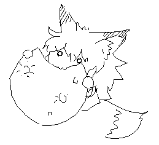
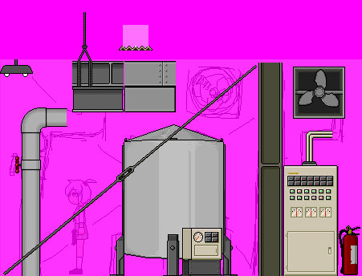
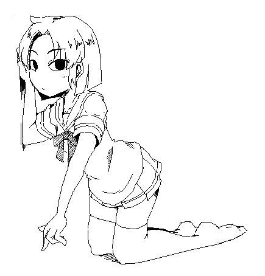
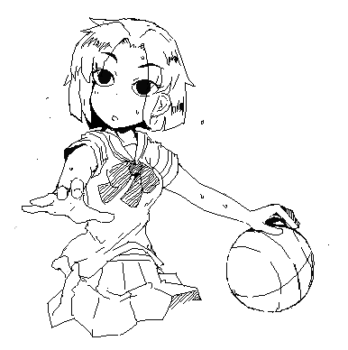
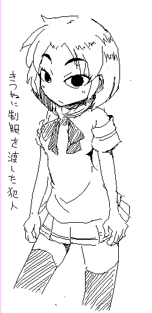
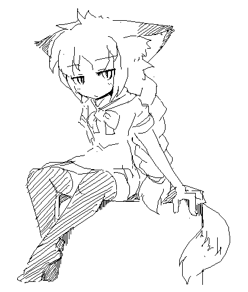
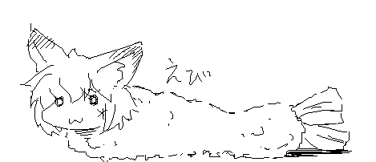
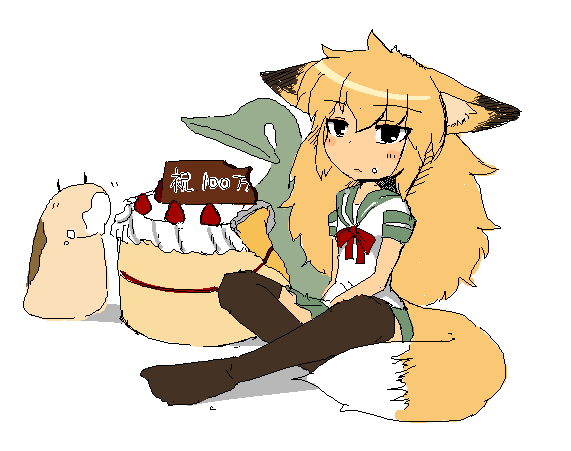
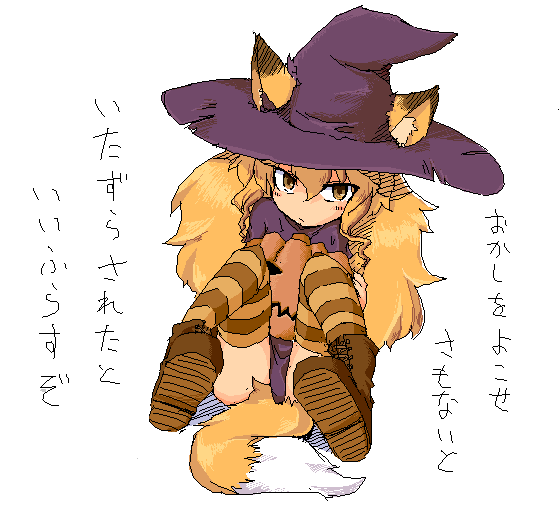
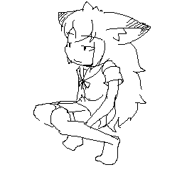

------------------------------------------------------------- 雑記 ログ9（2011/9/14から2011/12/18） ------------------------------------------------------------- -----2011/12/18----- と，いうことで溶鉱炉です． 3-3はマップチップのお披露目がメインだけど， 3-4ではマップギミックも追加していきたいです． あと声も入りました． 素材不足だから声が似合ってないって意見もあるかも知れないけど そこはまぁ適当に差し替えて下さい． 初日5000オーバーとはやはりバケモノだなー

地球は青かった 月はまずかった >> 12/18 00:12 スポーツに励むりんこちゃんさんの脇をペロペロ。 へんたいだー >> 12/18 02:39 月の兎は美味だった うさぎなべ >> 12/18 11:47 見るがいい愚民ども… これが「1get」だ…ッ!!!!!! だからいつも思うんだけどどこからの1getなんだ >> 12/18 13:04 月と太陽はそれぞれさきつねさんに追いかけられていて、追いつかれると月食（日食）が起きるというどっかの神話みたいな設定 日月セット定食は永遠に食べられない運命 >> 12/17 01:35 ガチエロCG集は作らないんすか きつねさんで昔作った まぁやってもいいかもしれんね >> 12/17 09:11 >とりあえず対物狙撃ライフルの直撃でたんこぶで済む程度 一方俺は大人しく貢物をささげて DOGEZA外交で頼み込む事にした 誠意（めし）をください >> 12/17 19:45 前はやられてる姿見ると｢痛そうだなぁ･･･｣とか思いながらなんの反応もしなかったんだけど、最近は奈々さんがやられてるの見ると興奮する。 私も本格的にこっちの世界に引きずり込まれてきました。 ようこそ >> 12/16 18:14 マップチップの配置からして嫌な予感しかしないｗｗ よーこーろ >> 12/16 22:23 リンコさんの目を見て「なんかどっかで見たことあるなぁ」 と思ってたら「未確認少年ゲドー｣と同じだったｗ ゲドーが女の子だったらブレイクした >> 12/15 00:31 ごんぶと触手で首と胴体を締め上げつつ下からガンガン突き上げるのは、エロなのかリョナなのか。 それであはんあはん言い出したらエロじゃないかしらね >> 12/15 06:17 ジャニスレポート ファイナル 現時刻・もう良いや 古鉄は黙ったまま何も答えない、まぁなんとなく解る、あいつは誰とも一緒にいられるような奴じゃないし、今もきっとそんな感じなんだろう、 猫は猫らしくすればいいのに、こういう時だけは双子で生まれてよかったと思う、過去の名前なんて思い出したくもないし、 今のマスターがくれた今の名前の方が好きだし、そして私は本堂に先ほど見つけた手ごろな石ころを置いて帰ることにした、 ここでまた古鉄の猫なで声が来るかと思いきや予想に反して何の返答も止める言葉も来なかった、ただ神妙な顔でこちらを見ている、 どうしても気になった私は話しを聞くことにした「おい古鉄、何かあったのか？」すると古鉄は口元に手を当てて少し考えて悩んだ挙句に話し始めた 「いえね？第１３代目のあの屍原はんのことなんですけど」屍原・・・耳をふさぎたくなる元の私の苗字だ・・・ 今の私には全く関係ないが４大名門の一角をなす私がもっとも軒先を借りたくない場所の一つだ、 嫌いだから家出して戻らない決意まで決めているのだから当たり前と言えば当たり前なのだが、古鉄は続けた 「まぁジャニスはんの言うとおり今だにその言葉は発していらっしゃいますわ、うちもそう思いますし、きっと誰も反論する気も無いと思います、 この日本中の猫族の中にジャニスはんのこと知らん子はおらんと思いますし、むしろ元名のほうを知らんの方が多いでっしょうのぉ・・・」 古鉄が何かを伝えようとしているが言葉尻を濁している、こういうときは察してやるのが友人ってもんだ、 ゆえに私はそれ以上は無用と言わんばかりに古鉄の肩をたたいて言い放った「じゃあまた夏あたりにでも来るわ、 今度はお前がいるときに来てやるよ、冷やしたラムネ用意しておけよ？不機嫌になったら即刻帰るからな？」 その言葉に言うべきか言わざるべきかと迷っていた古鉄は困った顔のままただ「解りましたわ」とだけ答えた、 私はそのまま鳥居をくぐって表に出た、さてと、久しぶりに実家に帰らなければならない理由が出来たようだ、 冬なのに良くやる、コタツの中で包まってりゃ良いものを・・・と思いつつ私は一路実家へ足を向けた、 当分マスターの頬を引っかきに行くことは出来なさそうだ、でも今の私には帰る場所がある、それだけあれば十分だ、 いざこざ終わらせて早く帰るとしよう。 ジャニスレポート ファイナル 完 おつ >> 12/15 16:13 月をも食らうこの食欲 一回百円で月食が見られるという商売を始めてみてはどうだろう（提案） 復元がむずかしいです >> 12/15 16:14 Chrono o'clockやったぜ （｀ェ´）ﾋﾟｪｰ ありがとうございます >> 12/15 20:32 狐耳の中に指突っ込んでくすぐりたい やめい >> 12/15 22:14 なんとなく全裸待機します さむいね >> 12/15 23:09 さきつねさんかわいいよ かわいいよ かわいいですよ >> 12/15 23:09 「おやすみまん」ってなんですか(*‘ω‘ *)？ ぐぐれ >> 12/14 00:38 CCのくらげさんの感電で股間から出てくる液体が黄色っぽいじゃないですか 前作みたいに無色かCG集みたいに赤色にしてくれると僕トテモウレシイデス ウレシウレシウレシ ウレシイデスヨオオオオオオオ無理ならいいんですONEGAISIMASU ほぼ無色のつもりだったけどちょっときいろかったかしら >> 12/14 06:20 更新お疲れ様です！ 秘密施設だと センサーで打ってくる罠が復活しそう？ 楽しみです！ ｶﾚｰｳﾏｽ 涼子さんｶﾜﾕｽ あれはちょっと激しすぎるからなー >> 12/14 18:04 そりゃ月って岩で出来てるんだから… というか月をも食べちゃうきつねさんの食欲がこわい 大食いは任せろバリバリ >> 12/14 18:27 奈々さんの串刺しされてる絵が見たいですｗｗ 妄想力をきたえるといい >> 12/13 01:31 萩月はおいしいですよ？ おいしいね >> 12/13 12:58 そうだ、皆ゆっくりになれば胸部の大きさなんか関係なくなるね 希望が持てるよ、やったね奈々ちゃん おい、やめろ ちょんぱー >> 12/13 20:01 食べ物で青いっていうとなんかまずそうなイメージ としたら、地球の味は・・・ ポーションさんの悪口はやめろ >> 12/12 03:01 CCを涼子さんでプレイしてたらなぜかソニックを思い出して、 押入れからほっぽり出してプレイしてたら朝になってた せーがー >> 12/12 03:53 月の直径は約3474km、それを食べられるきつねさん 次は地球（直径約12700km）に挑戦だ 美味しければありですね >> 12/12 04:13 1，2面が比較的easyだったからついうっかり感覚が麻痺してたけど、 3面でようやく思い出したよ・・・。「あぁ、そういえばサキさんのゲームって、こんなんだったわ・・・」って感じで。 やっぱ殺されながらちょっとずつ覚えていくこの感覚、すげー楽しいっす。がんばってくだしあ！ 難易度調整はむずかしい 今回は全体的にぬるめ >> 12/12 10:30 いいこと思いつきました！ 敵キャラおよびゲームオーバーの新しい案なんですが、獣に喰われまくるというのがいいんじゃないでしょうか。エヴァのアスカみたいに いいよね 4面は生き物ステージの予定だから考えとく >> 12/12 17:44 りんこちゃん可愛くて萌えっ バスケもできるあたり、 涼子ちゃんと同じ体力系？ 胸元も涼子ちゃん同様に恵まれてる みたいですしね。(*‘ω‘ *) わりと活発 >> 12/12 18:02 akinatorで幽紀さんを発見！！ ほんとだー 絵はなかった >> 12/12 18:09 月をあんなに簡単に食するなんて・・・あの大きさだと地球からいつでもパンツ丸見えだ！！ パンモロ！ >> 12/12 20:06 どうでもいいことかもしれないこともないのではないかもしれないけれども、りんこさんの眉毛が素敵。 ＜●＞＜●＞ >> 12/12 23:39 ○getとか全く気にしないで※した時に限って３げっとしてるじゃないですか！やだー！ ↑コレは多分８げっとくらいと見た どこからだよ！ >> 12/12 23:43 ロックマンゼクスのスクラップ工場っぽいステージ。 こまめにジャンプしないと主人公がどんどん床に沈みこんでいって動きが鈍くなっていく図が非常にリョナくてつぼったのを最近ふと思い出したよ。 プレス機的なのはよていしてます >> 12/11 01:19 小説を送りたいのに、気力が足りない… 帽子猫… がんばってくだしあ・・ >> 12/11 02:10 さきつねさんが進化してキュウコンと化してしまっただと…… いや、実は普段の姿は人を騙す為の詐きつねモードで、この姿こそがイラスト描き＆ゲーム制作＆デバッグ中な真のさきつねさんなのだろうか。ううむ、妄想寄りの考察が迸る。素敵だ。 しかし、こういった姿の方が普段の姿よりも生殺与奪の権をめぐってmgmg死合いたくなる魅力が有るような気がしないでもない だが残念な事に、私の歯は対物狙撃ライフルどころかゴリラの握力程度の攻撃力すら持ち合わせていないので死合えばDEAD ENDルートしか見えない。 しかし、何か品定めするような姿勢で考え込んでいるようにも見えるので、自分秘蔵の卵かけ御飯レシピを免状にすれば生き延びるルートが残されるかもしれない。 だが待って欲しい。このような緊張状態でこうも長く考えている隙を見せていれば、普通ならば文字通り｢あっ｣と言う間も無く攻撃されて死んでしまう。 つまり、今こうやって考えている自分は既に死んでいる可能性が高いのではないだろうか。 この拍手を書き終わっている頃には、私は既にあの世に居るのではないだろうか？ ならば、この今の私が持つ意識とは一体なんなのだろうか？ 宇宙とは何だ？無とは一体……うごごごご。 という、ネタを多分に含んだ妄想を垂れ流したくなった。反省はするが、踏み留まりも後悔もしない。後悔なんて、あるわけない じつは夕飯が何かを考えているだけかも知れない >> 12/11 02:20 追伸: ちなみに、これは機密情報なので不特定多数の目に触れる場所では書かない事にしているが……卵かけ御飯には有精卵を使い、白醤油をかけるのが俺のジャスティス(まさよし)である。 追追記: どうでもいいが、ネットの情報だと日本産の卵は生でも食えるが海外ではそうとも限らないと聞く……生卵とは、生粋の日本食なのだろうか……？なんというか、非常に疑問だ ロッキーが生卵食うのは異常さの描写らしいですね >> 12/11 02:32 追追追記: 卵卵と書いてたら、無駄かどうか微妙なトリビアまで思い出した。 どうやら最近の研究だと、鶏卵や鶏肉には頭の老化を防ぐ作用が有るとの専らの噂だ。実際にそうだとしても、自分には科学的に確かめる手段など自身の頭で実験として証明するくらいしか無い。 という訳で、こんな事を書いてると腹が減って誤魔化そうにも仕様が無いし、御飯を……卵かけ御飯を食べてくる事にしよう 卵掛け卵 >> 12/11 04:44 二人 × 一人 ○ (*‘ω‘ *)？ >> 12/11 09:17 I find CrackleCradle has some problem when work with external sound card. http://i2.photobucket.com/albums/y33/u155247/1.png I think that's because GameMaker only work with AC97(Realtek Audio). Solution: (1)go to BIOS enable onboard sound device and install driver. (2)pull in your speaker signal wire to motherboard. (3)go to windows control panel. (4)select "sound and audio devices". (5)set onboard sound card as default device. http://i2.photobucket.com/albums/y33/u155247/2.png thx =3 >> 12/11 18:14 りんこちゃんさん見て誰かに似てると思ったらあれだ。 トゥーンリンクだ。目だけだけど。 なのでりんこさんです >> 12/11 22:57 きつねさんきつねさんあぶらげあげるからしっぽをいっぽんくださいな。 ことわる >> 12/11 23:34 さきつねさんてきにはなでられるのやもふられるのはどんな気分なのでしょうか？ 喜んでもらえる時もあれば蹴られたりすることもあるのですが。 頭をわしゃわしゃされるようなもんじゃなかろうか >> 12/11 23:36 ('ω'ﾉﾉ"ぺん！('ω'ﾉﾉ"ぺん！ヾ(*'ω'* )ﾉﾞぽいん (*‘ω‘ *≡*‘ω‘ *) -----2011/12/11----- 毎度拍手だけってのもアレなので現状を見せてみよう 今作ってるマップチップはこんなん  そしてりんこちゃんさん  そしてCamelさんと3Dりょなげの作者さんの強力コンビがおくる丸呑みゲーがでたよ 私も演出ですこし参加させてもらったよ 敵は1種類だけだけど，丸呑み好きなら後悔させないよ  名前はりんこさん >> 12/10 00:31 れどめを読まなかった私はワイヤーを切れないところですり抜ける術を身につけた。 いや、ジャンプとか空中ダッシュでなんとかなるって！ほんとに！しんじて！ しってる >> 12/10 18:56 CCで涼子さんが壁を背にした状態で↑を連打すると壁が続く限り上昇出来るのですがこれは仕様ですか？ そんなことより抹茶がうまい いまんとこ仕様 でもそのうち治すかも >> 12/10 23:36 さきつねさん可愛いよ 奈々さん可愛いよ 涼子さん可愛いよ 幽紀さん可愛いよ あとよかったら結婚してください おことわりしておく >> 12/09 00:55 …制服を渡した犯人ってことは…、それまで全裸？ですか？ ボロ布くらいはかぶってたかもしれん >> 12/09 14:02 サンタさん、きつね観察帳２ください 良い子にしてたらあるいは >> 12/09 17:37 回転のこぎりさんに背後から殺された時の回転のこぎりさんの鬼畜さ キュイーン >> 12/09 21:14 この娘、人殺しの目をしておる… ＜●＞＜●＞ >> 12/09 21:38 うわー犯人かわいい ×してもいいですか？いいですよね！ いいんでしょうか >> 12/08 16:08 英語で拍手をしてみんとせん Korekara mo Ganbatte Kudasai それなんてローマ字 >> 12/08 20:05 更新見落としたOTL 更新お疲れ様です ステージ３完成 楽しみに待ってます ｶﾚｰーｳﾏｽ 頑張るよう >> 12/08 22:45 涼子さんの蛙戦は壁を背にして戦えば怖くない なるほど >> 12/07 00:57 犯人というだけあって目付きが悪い・・・ニヤッて感じのSな笑顔が似合いそう。 あと『夢日記更新されててうれしいデス』って雑記みて夢日記見に行ったら、内容忘れててほぼ全部新しく見えた。 前に見たのにここまで綺麗に忘れるなんて・・・歳か。 お得 >> 12/07 01:05 歩き方を知らず、ジャンプで3-1最初のワイヤー地帯を抜けていた私がいました。これで勝つる！！ それも又吉 >> 12/07 05:30 よし、ステージ３か。行ってみよう……ブツン→リトライRキー お、新キャラだー、とりあえず奈々さんで進むか。爆弾排除して……ブツン→リトライRキー げっ、爆弾２回食らってしまった……スタミナない時にダウンした時の起き上がりダッシュ、必死に逃げようとするのがいいなぁ……ｷｭｲｨｨｨﾝ、ｽﾞﾊﾞﾊﾞﾊﾞﾊﾞﾊﾞﾊﾞﾊﾞﾊﾞ→リトライRキー ……初見殺しやん……(´；ω；`) 音で予告あるじゃないですかー！ >> 12/07 07:32 おはようございます。やはりこの晴れ渡った空の下、朝日を浴びて寝床から起きた後には1Getに限りますね。 遅いよ！ >> 12/07 11:34 りんこさんは狐萌えで制服萌えなのかー かもしれない >> 12/07 12:12 さきつねちゃんにとっては、汚職事件もお食事券になる。 求職活動は、さしずめ給食活動といったところか！ 給食カツ丼 >> 12/07 13:57 がしーん(*‘ω‘ ≡‘ω‘ *)がしーん さきつねさんロボだよ 自動で3ゲットする代わりにめしを要求してくる優れものだよ めしをください >> 12/07 13:59 君がッ！なつくまでッ！なでるのをッ！やめないッ！(* ‘ω‘)っなでなで がっつく >> 12/07 16:23 さきつねちゃんは戦闘用ではないとすると、ちょっと銃とか格闘技の心得があるだけの女の子？ なんだ、俺でも勝てるじゃねーか。 犯そう とりあえず対物狙撃ライフルの直撃でたんこぶで済む程度 >> 12/07 16:27 っご飯 mogmog >> 12/07 16:27 ＢＢもＣＣも応援します！そして友達にも教えます！！ ノンケを無理やり誘わないようにね >> 12/07 16:28 ＣＧ集が買いたいなぁ、いつかネットで配信してくれる事を祈ります。 DLにあるよ(*‘ω‘ *)？ >> 12/07 16:29 未成年とか知るかぁああああああああああ！ 知れ >> 12/07 16:29 しょくしゅって良いよね いいよね >> 12/07 16:50 機械も人間も描いてるけど、人機一体は無いの根。 逆間接とか四脚の女の子がどれだけかわいいかは分かるよね？ 好きっちゃすきだけど痛がる描写がびみょうに似合わんのよね >> 12/07 16:56 既知だったらすんません つい最近ボーラビ２の一面が公開されました ハナ○の完成といい今年はリョナゲが豊作ですね 出来いいよね うらやましい >> 12/07 17:00 ゆっくり製造工場が下水道の先にあると聞いてやってきました (*‘ω‘ *)≡ ｽｨｰ･･･ >> 12/07 17:49 ふむ…… むふ… >> 12/07 21:20 「狐に制服を渡した犯人」なるほど・・・・・って誰だお前！？ 黒目がちょっとでかくて怖いですｗ <●> >> 12/07 22:06 いつもさきさんにしつもんをしているものですが、ずうずうしくも、さきさんに絵のリクをしてもよかですか 薬品系のリョナ絵がみたいでございます 自分は薬品シチュがもっともすき でして 前払いで稲荷ずし百貫さきつねさんにあげておきますね ( ・ω・)つ□←稲荷 http://www.pixiv.net/member_illust.php?mode=medium&illust_id=14879346 >> 12/07 22:21 ねんか゛んの はたち に なったぞ！ とりあえずおかずを捜そう。 google[りょな ] Enter。 ｯﾀｰﾝ >> 12/07 22:22 ショットガンかわいい いいよね >> 12/07 23:01 最近は皆のコメントとそれに対するサキさんのコメ返しが楽しみになってきた みんなよくそんなに面白いコメント思いつくものだなぁ 私はわりと脊椎反射 -----2011/12/06----- 年末にむけて忙しくなるよう 今は3－3のチップを書いてます
 >> 12/06 03:56 ジャニスレポートⅤ 現時刻わからん 私が言ったその言葉に古鉄は少し思い出すように右ほほに手を当てて考えていた、そして、こう言った 「なんやぁ、引っかかれに帰らなあかんとか・・・言ってましたな、待たせてるとか、家が壊れてないか心配だとか、 そんなこと言ってたような気がしますえ」やっぱりな・・・マスターならそういうこと言ってるんじゃないか と思ってはいた、色々考えれば解る、マスターはお人よしだから、でも引っかかれに帰るといわれているとは思わなかった、 帰ってきた時に引っかかなかったのは悪い事をしてしまったかな？と少しばかり思ったがあんな事があった後だし、 サキの相手で疲れていたあの時にその考えは浮かばなかった、そんなことを考えている私を見て古鉄はニコニコと微笑みながら 「ほんまに居を起きたい場所を見つけはったんですなぁ、なんだか残念やわぁ、ここだけがなんだかんだ言っても ジャニスはんの家やと思っていたのに、冬の間だけじゃないんでっしゃろう？今のあの人ん所にいるのんわ？」 微笑みながらも残念そうだと言うことは伝わった、私は答えるように頷いてのどを鳴らした、その行為に古鉄は受け入れるように また微笑んでくれた、これで私がやるべきことは終わった、そろそろ帰るとしよう、そう思い立ち重い腰を起こした、 砂を払うように尻をたたき帰路に着こうとした、だが一つ重大なことを忘れる所だった、ついさっき聞いたばかりだったのに、 すると私は手ごろな大きさの石ころを探し始めた、古鉄は怪訝そうな顔で見ているようだが気にせず作業を続けることにした、 少しだけ探してなんとなく気に入った大きさの石ころが見つかった、それを察したのか古鉄が声をかけてきた 「奇妙奇天烈な行為は終わりはりました？」自分で要求しておいてお前が忘れていれば言うことなしだと目線で 突っ込みは入れておいた、最後に古鉄に一つ重要なことを伝えることを忘れていたことに石を探している最中に気がついた、 そして私は出口まで行くと古鉄がなんとなく寂しそうな猫なで声で言った「帰ってしまいますの？折角来たのに、 二三日ゆっくりしていけば良いですやん」だが断ると言わんばかりに私は「古鉄、妹によろしく頼むわ、どうせあいつは、 まだ私が後を受け継ぐべきだったんだとかほざいてるんだろ？」その言葉に古鉄は黙り込んだ。 ジャニスレポートⅤ 続く めしはまだですか >> 12/06 19:35 BBcg買いました。こんな感じで出してくださるともれなく懐があたたまる病気になってしまいますよ(*‘ω‘ *) 心温まる画集 >> 12/06 19:36 そういえばサキツネはどんな下着着てるんです？(*‘ω‘ *) とりあえず上はスポーツブラ的なものだろうな >> 12/06 19:37 エビフライの画像をリクエストします(*‘ω‘ *)  >> 12/05 05:58 Fire from the Flamethrower robot should be a little bit more transparent. Currently, view is blocked too much. All right. I'll change in next version. >> 12/05 09:51 Foxivにある大神九十九さんはどちらのキャラなんでしょう。 Pixivで以前サキさんが書いていらっしゃるのは見ましたがタグを見てもおひとりだけなので……気になりました とある知り合いのキャラなのだ． >> 12/05 16:14 12.7mmで胴体真っ二つってシチュはサキさん的にどうですか？ うーん，真っ二つ系はあんまり苦しまなさそうなのがのう >> 12/05 22:00 か・・かぶ・・かぶ・・か・・かぶ・・かぶと・・かぶとぶしいいいいいいいいいいいい おおかまきりぶし >> 12/05 23:05 更新まち～ 今月は車の免許取りで忙しい・・・ ｶﾚｰｳﾏｽ ｳﾚｰｶﾏｽ 免許はとったけど使ってないやー >> 12/04 05:29 拍手、拍手(‘ω‘ 三 ‘ω‘) ぺちぺち >> 12/04 12:30 ぺぺろんちーの ぺちぺちぺろんちーの >> 12/04 18:31 久しぶりに来てみた。 ちょくちょく見に来る私。 どうでもいいですね、はい。 おひさしぶりです >> 12/03 02:55 ゴハン！ パン！ >> 12/03 08:13 あげぽよ(*‘ω‘ *) ぽいん >> 12/03 13:08 そういえば幽紀さんの苗字ってなんなんですかね？ Readme嫁 >> 12/03 15:02 風邪引いた、鼻水が無限に出てくる、辛いお… でもなぜかPCをやる元気はある! PCは苦行じゃないですし… >> 12/02 00:07 CCのワイヤー説明でかすぎて吹いたｗ Readmeに色々とちゃんと書かれてるのに、全然読まない人居るんだなぁ 新しくゲーム買った後説明書読まずにスタートして操作分からずに詰まる人ってかんじなのかな まぁこっちの提示方法も悪いとも言う >> 12/02 16:00 ＞なつくようにすると外見も犬に似るらしいですね ではさきつねさんもなつかせてみよう(* ‘ω‘)っなでなで ガブゥ >> 12/02 16:30 What's this do? >> 12/02 16:30 What does this do? I see a text field and a button. you can send message to me. >> 12/02 16:49 ごはんゲーときいてはだまっていられない(*‘ω‘ *)三3 (*‘ω‘ *≡*‘ω‘ *) >> 12/02 16:53 100万ヒットを記念して100万人のさきつねさんが(*‘ω‘ *)＜ごはんください 合体してキングさきつねさんに >> 12/02 17:24 CrackleCradleにラミアとかアラクネとかモンスター娘さん出る予定とかあんのん？ ないこたない ただそっちの想定の動きをするかはしらん >> 12/02 21:31 尻尾が三本あると尻尾三つ編みというのも可能なのかな？ 椎骨痛めそうだけど とりあえず指を三つ編みして見せてくれたら考えます >> 12/01 21:20 CCの更新も嬉しいですが、 BBも何か新しいの付けて更新してくれませんか？ うーん，かんがえとく >> 12/01 23:06 気合いが足りねぇ 俺の がんばれ >> 11/30 01:17 タルタルソース たるるーと >> 11/30 16:53 関節技をかけるロボットってエロいと思うけど、どうでしょう？（白目） ちょっと頭よすぎてなぁ もうちょっと頭悪い攻撃のほうがぽい >> 11/30 22:09 歩かせてて気付いたんですが、幽紀さんのスカートって前にスリット入ってます？ 大胆ですね……。 手抜きしてるだけだけどそれもわるくないかも >> 11/30 23:51 このゲームを知ってリョナ好きになりましたｗｗｗ ありがとう >> 11/29 02:10 エイになってきつねさんの脳髄チュッチュしたいです。 ～( =) >> 11/29 07:59 CCの新しいのダウンロードさせていただきました！ 残念ながら、今は中指をノミでずっぱりやって 血がピュッピュと飛び出した傷口の抜糸がまだなんでプレイできませんが、直ったら真っ先にさせていただきます！ あいたた …はっ、この状態でやって、ゲームの中でゆーきさんが苦しみつつ、俺も指の出血と痛みに悶えるシンクロプレイもありか！ あいたた >> 11/29 19:27 ステージ3-2何回やっても詰んでしまう・・・ マシンガン4，5丁ダッシュで行く→ディスク グラインダ機械にダメージ&戻される＝ マシンガンの餌食＼(^o^)／ その先も何回も詰むのでやけになって 攻撃せずにダッシュで行ったら楽に行けたｗ 案外そんなもんです >> 11/29 22:09 ぐへへ、さきつねさんぬいぐるみで操って可愛いポーズを取らせた後におやつのもとに導いてやるぜぐへへ(*‘ω‘ *) 食べ物のためならやぶさかではない >> 11/29 22:12 スライムまんも流行ってますしさきつねさんまんもいかがでしょうか(*‘ω‘ *) (*‘ω‘ *)ソビエトロシアでは肉まんが君を食う！ >> 11/29 22:14 質問なのですが、さきつねさんは寝るときは猫のように丸まって寝るのでしょうか？それとも布団を使って普通に寝るのでしょうか？(*‘ω‘ *) 寝相はわるいです >> 11/28 01:10 あのネバ拘束マシンが形を変えて登場したことに歓喜ヽ(ﾟ∀ﾟ)ﾉ なんなら、BBみたいに瀕死時＆赤ゲージ0の時に喰らったら抜け出せなくなるような仕様にしてみては 必死にジタバタしても抜けられない、そんな姿を見てみたい(*‘ω‘ *) それはそれで扱いがむずい >> 11/28 01:17 夢日記更新されててうれしいデス 幾つかまだネタがあるのでまた書いとく >> 11/28 16:57 リョナラー実況、りんご雨氏について ふむ 上手な人だと思います >> 11/28 17:20 3-2の最後にたどり着いた時奈々さんは頭がなく銃を落としていて服がぼろぼろで片足が無い状態だった ダメじゃないですかー！ >> 11/28 17:35 CrackleCradleの更新おつかれさんです。 ういうい >> 11/28 17:55 CC落としてファイルを見漁ってたらボイスのフォルダ発見 でもゲーム内だと出ない・・・ オプションでボイスボリュームMAXにしてるんですが・・・ なんかミスりましたかね？ まだ音出るようにしてないんよー >> 11/28 21:34 ミリア戦記の緑色のデカワーム(ボス) 戦のＢＧＭがＣＣで使われたりできますか？ 出来るならどうか引用してください うーん，予定はないんだー >> 11/27 00:56 ↑ ←ここに罠→ ↓ ゆうきさん髪の毛ほどけるのすごくいいよぉ かつてない興奮 乱れ髪いいよね >> 11/27 02:26 エビフライはやばい。死者が出る。 殺人エビフライ >> 11/27 02:56 さきつねさんの絵可愛いです。某所で見たあざみん絵もいいですねー。追加シェル見てみ隊 たくさん同じキャラの絵を描くのってむずい・・・ >> 11/27 17:33 CrackleCradleにさきつねでないかなー？ﾁﾗﾁﾗ どうなるだろうなー >> 11/27 18:54 (*‘ω‘ *) ちんぽっぽ (*‘ω‘ *≡*‘ω‘ *) >> 11/27 23:18 ステージ3ワイヤーの場所の注意書きは一体・・・ 幽紀さんでスタイリッシュ空中分解を繰り返す人が多かったから？ うむ >> 11/26 01:03 アレルギーの人が海老を食すと、それはそれは大変なことになります。 わたしもたべられないです >> 11/26 03:54 気付いたら二段階ぐらい更新されてたです。無念 BBで散々お世話になった涼子さんだー！やったー！ ↓ 頭と足がぼでーから分離 なんてことを… よくある >> 11/26 13:53 やけになったような罠表示に笑ったｗ だってみんな読まないんだもん＞＜ >> 11/26 16:01 CC楽しいですこれからも更新頑張って下さい！ あとステージ3からヒトコロスイッチ（罠コンボ）が増えましたよね。 ふっとび→マミる→永久腹パンとかふっとび→壁叩きつけ→串刺しとか、 ガトリング運送→落下地点にワイヤーとか串刺し→こんがりとかとかとか… こういう鬼畜トラップは今後も増えるのでしょうかというか出来ればもっと増やしてくださいお願いしますorz いいよね >> 11/26 18:21 更新版プレイしました。 ステージ冒頭でのワイヤー忠告ありがとうございますｗ これで安心してゲームを進めることが…できない！ それに難易度が上がってるように感じてしまうのが不思議でした。 Ｐ．Ｓ 今更ながら幽紀さんの歩き方が可愛いことに気づきました。 ひょこひょこ >> 11/26 22:37 エビフライの尻尾は食べましょうね、 えびがくえん >> 11/26 23:43 サキさんサキさん、今フィリピンに出張で来てるんだけど、道路歩いてたら飯屋の店先でまさにえびふらーい絵のさきつねさんそっくり（狐耳と尻尾なし）なおにゃのこが同じポーズで似た髪型で目付きも同じ感じで佇んでたんだけど、凝視してたら隣の銀行前にいたショットガン持ったおっちゃんとアサルトライフル持ったにーちゃんがこっち近づいて来たんで、 ちょっとビビッて逃げようとしたらタクシーに轢かれそうになってクラクション鳴らされて、 クラクションに反応したおにゃのこがこっち向いてぱんちゅ見えたんでふと思ったんだけど、牛丼食いてー。 ネギダク >> 11/26 23:52 バイト帰りに華麗に1get どこの１だ >> 11/25 01:47 見ておれ若造･･･ これが「1Get」というものじゃ･･･ この老いぼれに宿り市極意を知れ そうか，なにいってんだお前 >> 11/25 02:04 新版プレイさせていただきましたよー ヤリ的なものが腹に突き刺さる演出GJ！欲を言えば刺さって死んだ時は時間経過してもヤリが消えないようにしてほしいなーﾁﾗｯﾁﾗｯ ふむ 検討します >> 11/25 03:24 hi >> 11/25 03:25 applause thx :) >> 11/25 13:58 きつねさんには穴と言う穴に揚げたてエビフライを突っ込む拷問をしてやろう oisi >> 11/25 22:13 おぉ、くらげやられがすごいことに！！ ちなみにですが、前のコメントが御幣を招きかねないことに気づいたので、一応弁解させていただきます。空気読めていませんか？の部分は私自身のことを言っています。 なぁに大丈夫 >> 11/25 23:19 幽紀さんだと蛙戦で５分くらいで倒せるのに涼子さんでやったら1時間近くかかったよ・・・ 今回の涼子さんチップ並に死にやすいよ ちゃんとヒットアンドアウェイしなさい >> 11/24 00:44 くらっきーくら・・・くろっ・・・からっで・・・くら・・・ｋらーで、でれ？ 舌を噛み千切ってしぬ >> 11/24 17:34 3-2でおっきした ひらけおっきっき >> 11/24 19:08 更新お疲れ様！ 今日もカレーがうまい！ カレーは良いもの >> 11/24 20:08 stage3-2やってみたけど何この鬼畜ステージｗ 案外なれるとそうでもない >> 11/24 20:26 Ｌ「私はリョナラーです。」 なにがなんだかわからない >> 11/24 21:35 3-2やらせていただきましたが、今までのステージがより鬼畜度が増しましたね。 いいぞ！もっとやってくれ うふふ >> 11/24 23:08 遠距離からの串刺し素敵 いいよね ゲームとしてはちょっとめんどい敵だけど(*‘ω‘ *) >> 11/24 23:53 3-1のワイヤーについて一言どうぞ Readmeよめ >> 11/23 15:56 ざっぷ三（うざい雑魚トップ三) 昔と今 くらげ 昔-かたい＋のけぞらない＋ダウン中に攻撃してくる 今-弾丸当てるとすごい吹っ飛ぶ＋二発で砕けちゃう 火炎放射 昔-炎の当たり判定が長い＋判りづらい 今-見てから射殺余裕でした マウントさんの明日はどっちだ ﾆｱ みんなの記憶に「強いマウントさん」として残りたいからでない 弱体化しても良いので出さして あのマウントさんがさらにパワーアップして帰ってきた！ 後新ざっぷ三の栄光は誰の手に？次回CrackleCradle第16話「その前に3ボス更新があった」 ZAP3は大人しくしてみた マウントさんは私の好みなのでどうなるだろうねふふ >> 11/23 18:58 いつもさきさんに質問をしている ものですが、奈々さんの胸部がだめ なら、こんなシチュはいかがでしょう 涼子さんは宝箱をはっけんした！ →しまった！どくばりだった！ →おや？涼子さんのようすが… →ざんねん！涼子さんはロリに なってしまった！ →抵抗できずにリョナられる と言うシチュはどうでしょうか お願いいたします 薬品シチュはいいもの( ・ω・) 頭は子供 体も子供 >> 11/23 21:21 きっと奈々さんなら 地面に仰向け体制でぱんつ覗いても 「リアクション面倒臭いなぁ」的な顔しつつ 若干強めに顔面踏んでくれるに違いないヒィン ﾀﾞｧﾝ >> 11/23 23:39 反撃されるとすぐにヘタレる幽紀さんに一目惚れしたものです 幽紀さんでジャンプして直ぐにショットすると空中で少し浮き上がりますが、 この瞬間に（タイミングはシビア）二段ジャンプすると打ち上げ花火の如く幽紀さんが跳ね上がる現象が起きるのですがこれは仕様ですか？ あとお漏らしする幽紀さんカワイイ 仕様でう(*‘ω‘ *) >> 11/23 23:56 BBのトラップ、ロボットが増えてきて嬉しいです(‘ω‘ *) 石化、凍結とかの固め系はプログラム的に難しいのかな。大好きなのだけど んーできなくはない ただ凍結はともかく石化は世界観的に入れづらいかな？ -----2011/11/23-----
 >> 11/23 05:06 拍手ラストなら尻尾もふもふ、ラストじゃなかったら食べ物を・・・・ この賭けに勝てるか・・・？ ラストってどれだろう >> 11/23 06:34 treat or treat・・・ ならばこっちはtrick and treat だ なんてこと >> 11/22 00:29 このタイミングなら1番コメントになるはずだ！ めしくれ！ 一番上にはなったね，と思ったら朝に拍手キて一番上じゃなくなったね >> 11/22 06:46 拍手返信途中に絶対寝落ちったよね？ というか別の用事で夜遅く（朝早く？）なったので一旦寝ました >> 11/22 20:15 いつもさきさんに質問をしているもの ですが、こんなシチュはどうでせうか 奈々さんを拘束→薬品投与→ おや？ななさんのむねのようすが… →おめでとう！ななさんはきょぬーにしんかした！ ヒャッハー！これで（姉に） 勝つる！ とおもったら毒薬で苦しみつつ お逝きになられる と言うシチュを 希望します( ・ω・) どうかお願いいたします あとペペロンチーニどぞ ( ・ω・)つ（辛） 奈々さんのあいでんててーが危ない >> 11/21 00:13 ＣＣいくらかやっておもった ななたん→殲滅ゲー りょうこん→避けゲー ゆうきん→タイミング＆魅せゲー きつね→ごはんゲー となるのですね！ 特に涼子さんでくらげの群れを華麗にスルー↓後の爽快感はなんともいえませんもぐもぐ そしてスルー失敗 >> 11/21 21:19 どこかのサイトでｂｂの天崎姉妹の声は サキさんが吹き込んでると言ってましたが 違いますか？ 違うといえば違うし合ってるといえば合ってる >> 11/20 00:02 すいません。昨日、排莢がどうのと言った者です。 こんなことでまたコメントを送ったものか悩みましたが 訂正させてください。 昨日のコメントはSexualでなくてSensualの誤りです・・。 あとご飯ねだられたのでドッグフードあげます。極北の大地ロシアでは狐の家畜化がすすんでるそうですよ！毛皮的な意味で。 失礼しました。以上です。 なつくようにすると外見も犬に似るらしいですね >> 11/20 00:54 最近蚊がうざいなーと思ったあと この時期に蚊に悩むっておかしいだろと気付き もうこれが普通なんだな…と哀愁を漂わせたのち 足の指の間をさされて痒くて悶えてるきつねさんを想像しました 足の裏とかめんどいよね >> 11/20 03:09 おやすみなさい～ やすお >> 11/20 03:21 λマジでλだわー λ-3 >> 11/20 03:22 100万おめでとー 大台に乗ったところでとりあえず1ゲットしとくわ そうか >> 11/20 03:23 奈々さんマミられまくってやばい 性欲をもてあます 怖くないね >> 11/20 03:48 ＞抵抗できなくなって後がメインだから それだ！！ いわばフェイタリティ的なものですね。 フェイタリティといえば昔、相手の腕を引きちぎり、引きちぎった相手の腕で相手を殴打するというのを見ましたけど、 確かにあれはリョナとは違う何かのように感じます。 あれはリョナというより猟奇･･･？ しかし、バイオハザードの死亡シーン集などはリョナといえるでしょうし、あまり明確な判断基準もないのでしょうかねー StudioSさんの作品の場合、まぁ作品によりけりではありますけど、あれは何といいましょうか。 さでずむ？ 好み >> 11/20 06:21 さきさん！ダツですよ！ダツ！ http://www.big.or.jp/~ishigaki/danger/NeedleFish.html ダツの回遊する海にさきつねちゃんを沈めるダツリョナという全く新しいジャンルを考えましたが どうせ食べるんでしょうね。 北斗神拳の前には止まった棒にすぎん >> 11/20 22:03 きつねにくおいし・・・おいし・・・ 木常肉 >> 11/20 22:14 遅れ馳せながらＣＧ集買わせてもらいました。 奈々はやたらクラゲの餌食になってる気がしますが気のせいでしょうかそうですか。 あとＣＣのＣＧ（紛らわしい）集などは出る予定はございますか？ 数秒前までスタイリッシュだったのに一撃食らっただけでよろめきながら必死に逃げ惑う幽紀さんが余りにも魅力的で一目惚れしたもので 色的に映えるのかもしれません ゆうきさんは食らう心構えがあまりないのでくらうとすぐにヘタレます >> 11/19 00:43 スピードキャラって先の見えるゲームだと大体思う存分動けて回避力高いのに キャラに画面の近い横スクロールとかだと一気に被弾率上がりますよね。 敵の位置を記憶してたりオートスクロールの場合とかは別ですが スタイリッシュの代償 >> 11/19 01:52 ジャニスレポート Ⅳ 現時刻前回同様 測定不能 やるべきことも終えて帰路に着こうとした時ふと思った・・・こいつは私がここに狙ってきていることを知っているのだろうか？ と思い立ったら即行動がもっとう、故に聞いてみた「なぁ古鉄、お前私が今年も去年もその前もこの無垢寺に来てたのしてたか？」 すると古鉄はきょとんとした顔でこちらを見ながら「はて？私はずっと寂しい思いしてましたけど・・・ジャニスはん来てはりましたの？」 そう切り替えしてきた、私は古鉄に着いて来いと言う様に首をクイッと傾けてそちらの方へと進んでいった、当然古鉄も着いてきた、 そこには横一列に石を並べておいた場所だった、そしてその石を古鉄に見せて「お前あんまりここ来ないだろ？掃除も時々サボるしな、 それに夏のある特定の日にお前は少し長い間無垢寺を空ける日があるからなぁ」そこまで言うと鈍い古鉄も気づいたらしい、 そしてふるふると震えながら尻尾を立てて古鉄は言った「何ですの？あの総会のときにいっつもここに来て帰ってくる前に帰っているって事ですの？」 私はその言葉にただ頷いた、夏の暑い中旅先で何も気兼ねなく休憩できる場所と言えばここで一人でいられるのもここくらいなものなのだから、 煩い奴とは出来るだけ会いたくなどは無いものだ、嫌いじゃないが煩い、本当に嫌いではない、むしろ好きだがこの煩さはたまらない、 自覚しろとまでは言わないからこっちから話を降るまでは黙っていろと言いたい、 「他にもちゃんと掃除もしてるし釜戸借りたらきれいにはしてるんだぜ？悪くは無いだろう、お前が行く前の状態に戻してるんだから」 そういう問題ではないと言わんばかりの顔で古鉄がこちらを見ている、どうやら来てないから会えないのではなく 「会わない様にしている」のが気に入らなかったらしい、そして古鉄は毛を逆立てながら言った 「石っころ置いていきはるなら本堂の所においていっておくれやすっ！」問題そこか？と私は目線だけでも突っ込みを入れておいた、 しかし私はこいつのこういう所が好きなのだ、今共に軒先を借りてるサキって奴もそうだが、やはり何かしら癖があったほうがいい、 それが如何でも良い事であっても、そう考えると無性にその「如何でも良い」物が恋しくなった、そして帰ることを決めて古鉄に言った 「なぁ古鉄、マスターは帰るとき何か言ってなかったか？」何故か聞きたくなった ジャニスレポートⅣ 続 じゃぁ冷蔵庫を狙ってそちらへ向かう >> 11/19 08:04 もうなにも怖くねぇぇぇぇぇええ!!!!!! ワイヤーなんぞダッシュで突破だッ!!!!!! うぉぉぉぉぉぉぉおおおおお!!!!!! 皆殺しだぜぇぇぇぇええ!!!!!! (´･ω･`)ｶﾞﾝﾊﾞｯﾃ みなごろされちゃう >> 11/18 00:05 おめでとうといわざるをえない そして１００万ヒットした狐さんが相手なら覇王翔吼拳を使わざるを得ない 大丈夫ガードした >> 11/18 19:49 排莢が美しい！ 排莢が正義！ はじめまして。CG集買いました。 リョナと言えばStudioSさんだった私には裸の一枚もないのが 衝撃的でした。新しい世界が開けた気がします。 だって死んでるじゃないですか。素晴らしい。 天崎姉妹のご多幸と健康をお祈りします(￣人￣) 裸より着衣のほうがえろい（個人的に >> 11/18 20:08 カエル倒せねえええええええええええええええええええええええええええええええええええええ がんば >> 11/18 20:19 排莢絶賛した男です。なんか死んでることが素晴らしいみたいな書き方になってた。 つまりセーコーやSexualの露骨な延長線にないことが素晴らしいと書きたかった。 なんかまんまと二回拍手してしまった。すんません。 SEIKO >> 11/17 13:44 おかしをくれればちゅうせいをちかおう(*‘ω‘ *) 中性子 >> 11/17 13:45 さきつねさんフィギュアもいいですけど、さきつねさんぬいぐるみもほしいです(*‘ω‘ *) 操られてしまう >> 11/17 13:46 赤いきつねと緑のきつねはどちらがお好きですか(*‘ω‘ *)？ どちもすき >> 11/17 13:47 できればごはんもほしいなー(首傾げ)ほしいなー(首傾げ) こてん >> 11/16 21:56 さきさんこのあいだはコメントをおくれず、もうしわけございませんでした そして遅ればせながら１００万ヒットおめでとうございます １ファンとしてこれからも応援していきます そしてお祝いとして百式機関銃を百丁ほどさきつねさんに あげましょう もらってどうしろというのだ >> 11/16 23:10 え？俺って1じゃないの？ そうかもしれないしそうじゃないかもしれない >> 11/15 13:46 さりげなく居る⊿がかわいすぎる… あ、きつねさんもかわいいですよ？うん (*‘ω‘ *) >> 11/15 13:47 書き忘れた・・・ 100万ＨＩＴおめでとうございます！ ありがとうございます >> 11/15 16:12 何か、普通に入ろうとしたら入れなかったんだが・・・ 忍者ツールズとか出て来て こっちでは起きてないのう 忍者ツールはこっちで使ってるHPスペースとか解析サービスです >> 11/15 21:55 いまさらですが、BBをやってすごく感動したので･･･。 僕はそれまでリョナゲというものをやったことがなかったので（リョナ自体は知ってました）、「こういう分野があったのか！」という気持ちです。単なるグロではないんですよね。確かに普通のゲームと違ってキャラが血を出したり切断されたり死んだりしますが、そこにちゃんとエロさがある。海外ではよくあっけないほど簡単に人がバラバラになったりしますが、ああいう無味乾燥な死じゃなくて、こう、なんていうんでしょうか。「次は一体どんな死に方をしてくれるんだろう」なんて言うとすごい不純な気がするんですが、正直言うとそんな感じです。キャラを死なせることに魅力がある。ゲームとしては死なせないでかっこよくプレイする方がいいのに、っていうパラドックスがあったりもして。 ゲームとしても普通に楽しめて、特に奈々さんの「キーボードで移動しながらマウスで銃を撃つ」っていうのがすごく新鮮でした（でもあんまりうまく動かせなかったり・・・）。ボスはすごく強かったです。どのボスも何度も何度も挑戦してやっと勝てた、っていう具合で・・・。即死とかランダム性が強い傾向があって僕はかなり苦手なタイプでした。特にラスボスはもう完全に運って感じで「あともうちょっとだったのにぃぃぃぃ！！」と嘆きながらやってたんですが、そういうもやもやした思いはバイクとEDで全部吹っ飛びました。あの演出がすごいよかったです。なんか達成した感があって、そのあとゲームの一番初めの上から落ちてくるとこに戻ってきて、何とももの寂しい思いが湧き上がってきたりもして、個人でもこんなゲームを作れるんだなあとしみじみ感動していました。すごく個性溢れる作品で、好きです。 僕は今年からゲーム作りを始めてまして、エロという要素を抜きにしても、さきさんは一ゲーム作者として尊敬できる人のように思います。そういうゲームを作るかどうかは別の話として、色々と参考になる部分がありました（そっちに行ってしまおうか･･･！！と思ったのは事実ですが^^；）。さきさんに出会えて本当に良かったです。 ふむ．ゲーム製作は楽しいよ！そちらのゲームもいつかやれることを楽しみにしてます >> 11/14 17:53 髪を降ろされた東雲さんが美しすぎて生きるのが辛いあまりリョナるのが楽しすぎるのですがこれは恋ですか？ 愛です >> 11/14 21:36 奈々と幽紀さんでやっとの思いで倒したカエル戦 を近接メインの涼子でやる前に(近接だからもっとむずいだろうな・・・)と思ってたら全然前の二人より楽にほとんどダメージ食らわず 倒せてしまったｗ以外ｗ 涼子さんとカエルは相性悪いつもりだったけど人によるんだなぁ >> 11/14 22:30 祝１００万HIT！これからもがんばってください！ がんばるよー >> 11/14 23:44 そういえばバトロワの涼子さんと奈々さんの設定は全部サキさんによるものですか？もしそうならいずれ有機酸のものもみたいです そうだね，まあアレはバトロワ用に急造したやつだから正式かというと不明 >> 11/13 09:16 まるのみ ○ >> 11/13 13:05 ステージ３のゆーちゃんとりょーこさんの対決イベあるじゃないですか。ななちゃんがカギ開けた後、りょーこさんとななちゃんが扉の下でやり取りしてるのを見て、「ああ、警備システムが再起動して、押しつぶされないかな」と妄想したんですが。 なしですか、ありですか。ありだったら２コマか４コマ漫画で見てみたいです。 場所的にはありですね >> 11/13 13:23 100万HITおめっとー 一緒にケーキ食べてもよいか！？ すきあらば全て頂く >> 11/13 15:29 遅れたけど100万おめでとー。 ところでワイヤーで足だけ切断とかがなかなかできません。どうしたらいいですかね？ 根性って言うなら根性でがんばる。 上から当たれ >> 11/13 16:06 髪がほどけだゆーきさんが可愛すぎて脳汁噴きだした あと勝手な意見ですが涼子さんの壁蹴りは壁方向＋左クリックか壁付近で方向キー逆入力の方がやりやすいと思ったり思わなかったりしますん んーむ，まぁいろいろ試してみます >> 11/13 18:12 もう今年もあと20日で終わりですね。 あーあーきこえない >> 11/13 19:24 ケーキは味わうのではなく丸呑みするもの ごきゅ >> 11/13 20:11 もっふり もふもふ >> 11/13 20:38 つ「ごはん」 mogmog >> 11/13 21:11 ニコニコでさきつねさんのマイページでニコレポと投稿動画が非公開になってるのはなぜですか＞＜ ん，なってたか また今度はずしておきます >> 11/12 00:03 以前胸部装甲の二重不等号について奈々さんが異論の申し立てをされたので修正いたしました。 胸部装甲 涼子さん＞幽紀さん＞>奈々さん なんてこと >> 11/12 00:21 有機酸の一人称ってなんですかね？ なんだろうねー 決めてない >> 11/12 00:46 天崎姉妹のエリョナも見たいな～とか思ってる。失禁だけでもいいんでみたいっす。……空気読めてなかったりします？ まぁ今回の更新とかよく見るといいかも >> 11/12 01:42 100万hitだと・・・？なら今の今まで思っていた事を言わざるを得ないな いつも本当にお疲れ様です。これからも陰ながら応援しています。 頑張りますありがとー >> 11/12 03:16 100万ヒットおめでとうございます 次は１０００万ヒットですね！ 何年後だろうねー >> 11/12 04:57 トップ絵の狐さんいつもと違うふいんき（なぜか変換できない）ですな それはそうと、遅ればせながら100万お喜び申し上げます もともと絵柄安定してませんしね… >> 11/12 11:15 100万おめです！ ういういー >> 11/12 11:34 stage3の機械の奥のパンチマシンと一緒の切り裂きマシンに体力が少ない状態で 攻撃され死ぬと壁際でキャラががくがくなってた あーうんそれ治したいんだけどねー >> 11/12 13:16 100万HIT記念ケーキをいただこうとしたさきつねをケーキがガブッといただく感じでガブッとうまい ソビエトロシアでは >> 11/12 14:16 WMPで録画したプレイ動画をニコに挙げようとしたら エンコードに失敗しました。サキさんはどうやって挙げてますか？ 普通にAVIで撮ってムービーメーカーで編集してWMV，そのあとMPGにリサイズして変換 >> 11/12 17:45 さきさん！ たとえ「落書き」だとしても、ただ好きなキャラを好きなように1枚描いて終わり、というのではなく、 「ラフを数枚描いて、よさげなものを採用するようにする」 「題材（描くキャラ）以外に何かテーマを決め、それを強調してみる （戦闘とか萌えとか、スピードのある絵を描くとか、構図に拘ってみるとか、絵の方向性みたいなもの）」 といったことに気をつけると、落書きだとしてもそれなりの絵ができあがるそうです！ （それなりの絵とは技術ではなく、見たときに何か伝わるものがある絵ということ） なんだか自分でも上手く描けそうな気がしてきました！！ ………イラスト講座って、見ただけで上達した気になれるからいいですよね 英語も本読んでるだけじゃ言えるようにはなれない 案外外国にぶち込まれたら言えるようになる そんなもんです >> 11/12 18:58 (TOP絵)⊿さん！？⊿さんじゃないか！？ もはやΔっていうか とづ >> 11/12 19:59 100万突破おめでとー 幽紀さん使い始めて、やっと奈々さんの射程距離の長さに気づいた今日この頃 ゆうきさんはむずい >> 11/12 21:02 ミリオン キツネ！ 祝い時はカレーに限る ｶﾚｰｳﾏｽ おめでとうございます＾＾ 年中無休カレーウォンチュー >> 11/12 21:39 やめろλ さきつねさんの分のケーキが無くなるｗｗ その時はλ食います >> 11/12 22:25 100万は取れなかったけど1getはしとくわ じゃあの いつの1getだ >> 11/12 23:17 髪がほどけた幽紀さんが可愛くて仕方ない かわいいね >> 11/12 23:19 １００万ヒットおめでとうございます これからも頑張ってリョナってください ういうい了解 -----2011/11/12----- 世間はポッキーの日だったらしいですね 100万ヒットありがとうございます．達成してすぐに更新出来なかったのはすまん ちょっとマジで忙しかったのよ…

トリートオアトリート >> 11/11 00:17 最近寒くなってきたので尻尾もふもふせざるをえない 寒い時には便利そうですね >> 11/10 05:37 あれ、ﾄﾞｩｧｰの絵はいずこへ？ なんとなく見たくなって保存しようと思ったのに>> 11/10 19:52 CrakleCradleが最高に楽しいです、ダメージをある程度受けてダウンするところや、その時にダッシュしようとすると転ぶところ。 また、体力が０でも赤ゲージがあれば這うことができるなどなど、いろいろと堪能させて頂いております。 完成を楽しみに待っています＾＾ ＢＢのＣＧ集も購入させて頂きました。 良かったです、とても良かったです。 重ねてありがとうございます がんばるー 這いずりはいいよね >> 11/10 21:46 じさくりょなげおきば打とうとしてじさくりょなげおっきばになってひわい あなたの頭がひわいです >> 11/09 02:56 まさかの串焼き 外はカリッと >> 11/09 06:08 >いたずらされたといいふらすぞ つまり私にとっての御褒美、兼既成事実と言う事でｓ…くぁｚｗｓぇｄｃｒｆｖｔｇｂｙｈぬｊみｋ、おｌ。ｐ－；・＠ おまわりさんこっちです >> 11/09 18:19 対物ライフルという響きには取り回しが面倒臭そうだったり 無駄に威力がありそうだったりと惹かれるものがある まぁ対物だからなぁ >> 11/09 19:49 CC無敵が無いから詰む状況が多いお茶 それもまたひとつのたのしみ >> 11/09 22:16 幽紀さんで1面ボスロボットでやってみました。くるくるガンランス を回しながら踊るように連射・・・上空から打ち下ろし攻撃さらに二段ジャンプ からの射撃及び上空を蹴って上空からの0距離射撃 で左右飛び回って溜め攻撃・・・・やべえ、めっちゃ爽快だｗ 慣れないとちょっとむずいけどね >> 11/08 00:26 hyoooooooooooooooohyohyohyohhyihyohyohyoooooooooooooooooooooooooooooooooooooooooooooooooooooooooooooooooooooooooooooooooooooooou ひょー >> 11/08 03:02 >いたずらされたといいふらす 恐ろしい子…!! 社会的抹殺 >> 11/08 05:14 ちくしょおおおおおおおぁぁぁ1000246かぁぁああ！！！ おめでとおおおおおおおお！！！ ありがとー >> 11/08 05:35 ＢＢ最高です！ 勝手ながら、イラストを描かせてもらいたいと思っております！ ん，いいよ >> 11/08 06:18 StudioSさんが作ってるゲームは間違いなくリョナゲーのはずなんだけど、なんかリョナゲーって呼ぶのはなんか違う気がするんだよな～。 これって私だけでしょうか？ さきさんはどう思いますか？ んー わりと抵抗できなくなって後がメインだからじゃないかしらん >> 11/08 07:46 ひゃくまんおめとおおおおおおおあおおーーーーーーーーーーーー ありっとー >> 11/08 16:02 きつねうどんどん どんどん >> 11/08 22:12 ふかふか ふかふかどんどん >> 11/08 23:13 100万突破おめでとうございます。 BBファンとしてこれからも応援していますよ。 CCもよろしく(*‘ω‘ *) >> 11/07 02:40 ﾉｺｷﾞﾘ!ﾜｲﾔｰ!ﾛﾎﾞﾊﾟﾝﾁ! 首なしで腹にノコギリ刺さっててロボットにパンチされまくるシュチュに出会うとは うふふ >> 11/07 03:09 (*‘ω‘ *)顔のきつねさんは、踏むと凄いぐにぐにしてそう ぶにょん >> 11/07 11:54 私メリーちゃん！今さきつねさんのお腹の中にいるの げぷ >> 11/07 19:27 百万突破すれば更新されるはずさ！ おそくなってごめんねー >> 11/07 23:49 １００００００突破おめでとう λさん1000000匹あげる。 λλλλλλλ…… 用意できるのだろうか >> 11/06 00:14 狐かじり for iPod… （ﾎﾞｿｯ MOGMOG >> 11/06 10:31 やっとキャラ変更できました！カエルを倒さなければ いけなかったんですね。やっと操作できるようになった 二人の操作が癖あり溜めありで使いにくいw ファイルにかいてあったじゃないですか－！！ >> 11/05 03:22 ジャニスレポートⅢ現時刻・・・時間軸が湾曲しているため断定・・無理 古鉄との無駄話はいつも好ましくは思っていない、ゆえに事だけを済ませることにした・・・ 「おい古鉄、火起こせ」古鉄は突然言われたことに目を丸くしながら答えた 「暖でも取りますの？そりゃまぁたしかにちぃとは寒いですけどもまだ焚き火という季節では・・・」 埒が明かないので私が興すことにした、帰ってこない言霊を待っている阿呆はほっておいて私は手際よく火をおこした、 間違いが起これば寺に火が燃え移る距離で、すると奴は飛び上がってその火の消化に来たそして鬼気迫る勢いで私にこう言った 「ジャニスはん？何してはりますの？燃えますやろ？！寺ぁ！燃あがりますやん？寺ぁ！」 煩い奴だ、こっちが所望したときにやらないからそうなる・・・と心で言いつつ私は言った 「火ぃ、起こせ」すると奴は私をある所へと案内した、焼却炉・・・と言うにはあまりにも豪華すぎるつくり、 これは儀式化何かを行うための曼荼羅？のようなものであった、まぁ、私が今から行おうとしていることには十分すぎる火力だろうと思い何も言わなかった、 そして私は目的の行動を行った、その目的はスケッチブックの焼却処分であった、 私がその火に向かってスケッチブックを放り込むと古鉄はいつもは横に一文字に閉じている目を大きく開いてそのスケッチブックの起動を目で追っていた、 そして「ジャニスはん・・・あんた重ね重ね何してますの・・・それはジャニスはんの・・・」みなまで言われたくはなかった、 そんなことは所有者である私が一番わかっているんだから、でもこれが最善の策であることは私の中でマスターの家を出る前から決まっていたことだから何も答えなかった、 炎の中で燃えて灰になっていくスケッチブックを見てそのころの思い出がまるで万華鏡のようにちらほらと思い出された、 忘れたいものもそうでないものも、その光景を見て微動だにしない私を見て古鉄も大きく開いた目をまたいつもの一文字にもどしてそれが灰になるのを見届けてくれた、 そしてその灰を集めて私は奴がくれたであろうお守りの中へと入れた、そしてその場所から出て来た時互いに何も語ることは無かった、 私も特に話したいことも無かったし、古鉄も何も言わなかった、でも私の心の許容範囲からいらないものがごっそり無くなったのだけは感じていた。 ジャニスレポートⅢ 続く ﾏｲﾑﾏｲﾑ >> 11/05 17:45 CCですが、起動後数プレイは平気なのですが死ぬたびにだんだん重くなっていきます、なんででしょうかね？ リークしてるのかしら…？見なおしておきましょう >> 11/05 19:39 獣耳ｷｬﾗが帽子被ると耳穴開けたり、耳の形に帽子変えたりしないといけない。大変だ ガンバればなんとかなる >> 11/05 20:33 CG集買わせていただきました！これからも応援してますね(*´ヮ｀*) ありがとうー >> 11/04 04:23 蜂が出ると聞いてDLしてきました＾＾ やはり蜂はいい・・心が洗われるようだ・・ 出てくる予定 >> 11/04 06:35 毎日五拍手計画(*'ω'*)(*'ω'*)(*'ω'*)(*'ω'*)(*'ω'*) (*‘ω‘ *) >> 11/04 11:58 mirror cube square >> 11/04 11:59 Angle draw sphere (*‘ω‘ *)？ >> 11/04 18:00 CCは奈々安定ですな stage3のやつに突撃するのが楽しいでつ あと俺…ずっと黙ってたけど… 鈺→金玉なんだぜ？べいべ そうか >> 11/04 22:34 Fate/zero面白いですね。 FateといえばExtraのキャス狐さんはさきつねさん的にどう思いますか？ 私は大好きです 突然あの方向にいくとはなーという感じ >> 11/04 23:13 涼子さんと奈々さんをガンダム的に例えるなら涼子さんがコーディネーターで奈々さんはニュータイプって感じかな？ いや、貧ニュータイプとか思ってないよ、うん (*‘ω‘ *) >> 11/04 23:34 見えそうで見えない・・・そして太ももがエロス・・・イイ！！ いたずらしてーなぁ－、してもいいですか？ めしをください >> 11/03 10:56 そろそろガッチリホールディングしてR押すまで永遠と電気浴びせるナイスマシンや ガッチリホールディングしておなかに毒注入するグッドマシンや ガッチリホールディングしてグレンラガンするナイスドリルを希望します します そういうのもいいね >> 11/03 12:56 1もーすぐ１００万！ ３はバグ取り終わってミリオン後にさせていただく予定 トーラスの 変態技術者共にナニカされて 円環の 理 に導かれて と申したかもうしたか ・・・・(*‘ω‘ *)？ >> 11/03 12:58 ばっさりやる鎌っぽいモノー 麦飯食ってろ おいしい >> 11/03 16:25 ノコギリさんに背後から止めを刺されてる最中にパンチロボの攻撃を食らうとノコギリさんが何も無いとこで豪快な音を鳴らしながらトマトケチャップ祭りするのは何でなんだぜ？ あらら >> 11/03 16:31 今更だが俺が1だと信じている オセエヨ >> 11/03 18:51 警告読まない人が多すぎて噴いたｗ ところで拍手の狐さんが妙に成長してるようですが食欲も9倍ですか？ 81倍です >> 11/03 19:22 「18才未満ですか？→YES→先生」なんて結構使われてるネタなのになぁ･･･ 案外皆馬鹿なんですね！ まぁうっかりさんがおおいのかもしれん >> 11/03 22:44 お義父さん、幽紀さんを僕に下さい。多分幸せにします。 幽紀さんに殴り勝ったら許可がもらえるかもしれない >> 11/03 23:43 ぷにぷにしていいかな ぷよぷよ -----2011/11/02----- 指摘を受けたのと前々から置いたほうがいいよなーと思っていたので エントランスページ作っておきました(*‘ω‘ *) >> 11/03 00:08 奈々たんの髪は白いけど、ロリBBAなの？ byりょならーの８さい 18禁を明示した後にそれ以下の年齢を宣言するとは >> 11/03 01:25 お菓子をあげるのでいたずらさせてください お菓子はもらいますがいたずらはさせません >> 11/02 01:47 ジャニスレポートⅡ 現在時刻、一六：○○・・・目的の場所へ行くための場所へわたどり着いた、だがしかし考察するとマスターは良くここを通り抜けてあそこへ行けたものだ、 もともと猫だったものすらあそこへ行くには才能や力が必要なのに、人間離れしているか人間を止めているか、今はそんなことは如何でもいい、 そして私は目的の場所へと進んでいった、するとそこにはいつもの如く変わらない空間があった、誰に邪魔されることも無く、 いられるこの空間が一時は心地よかったがマスターと会ってあそこに転がり込んでからは戻らなくなった場所、 そんなことを考えていると後ろからなまったるい訛りの口調で声が聞こえてきた、「おおっ！ジャニスはんやないですか！いつきはりましたん？うれしいぃ～わぁ～」 奴だ・・・私はそちらに振り返りながらスケッチブックを投げつけた、すると奴はそれを予測していたように受け取りつつ私の攻撃射程内まで一気に詰め寄ってきた、 「ちゃんとあの方は届けてくれはったようですねぇ、人間の方にしては感心やわぁ、ウチらも大概ですけど人間の方は笑えへんですからねぇ、 気分やで分らず屋で、鈍ちんでぇ～」まるでマシンガンとショットガンが発砲されまくっているような感覚だ、不必要な言葉は要らないんだが・・・ ということで単刀直入に言った「おい古鉄、私のマスターに変なこと言ったりしてないだろうな？マスターは根掘り葉掘り聞くような人じゃないから言いとしても お前は必要以上の不必要なことまでぺらぺらとしゃべるときがあるからな、変なことを伝えていたらお前でも許すことは出来ないぞ？」 きっとマスターも聞いてないだろうから私から紹介する、こいつの名前は「無垢之小路 古鉄」猫族の中じゃ名の通った名家の巫女猫の一人だ 他にも３家くらいあるが４人の中では唯一私がそばにいるのを許す奴でもある、他のはだめだ・・堅物すぎる、軒先を借りる気にもならない・・・ すると奴は少し考えた上で少しふくれっつらになりながら言った、「むしろ私が聞きたいぐらいやわぁ、あんまり相手してくれへんかったわ、 なんやぁ嫌いにはならんけど好みようもあらしません、確かにこのスケッチブックのことは話しましたしその周辺のことを話はしましたがねぇ」 表情から見て取るに嘘はついていないようだ、私の杞憂か、それとも何か知られたくない事でもあったか、少し照れくさくなった ジャニスレポートⅡ 続く せっかくだしホントにショットガンでも撃っておきましょう！ >> 11/02 02:01 奈々さんで最初のワイヤーどうやって抜ければいいの？ 歩け >> 11/02 07:08 涼子さんの手料理が食べたい おいしいカレーをどうぞ >> 11/02 11:24 今夜拍手更新と聞いて。前回の更新日からのオナ禁がとうとう解放されるんだ！ ナナ禁 >> 11/02 11:26 う…ふぅ。凌辱とかちょっとよくわかんないです。 そうですか >> 11/02 12:19 blackbroodすごく良かったです^-^-^-^ ありあがとー >> 11/02 15:22 トリックアンドトリートという全く新しいハロウィン グラボがイカれてCCができないんだよｸｿｧ！！ まとめてできるようになる日が楽しみという事にしておこう うーん，グラボ周りは正直イタチごっこだからなぁ・・・ >> 11/02 16:07 入口騙されたｗｗｗ あと、エントランスの挿絵ですが、あれは人間界では脅迫罪になりますんで、悪しからず・・・ 1get なんだって >> 11/02 16:17 いたずらされただと・・・かまわん！もっと言うんだ！ 偽証罪 >> 11/02 16:19 ぜひ言ってくれ！しかしコリｯグミをあげよう ゴキッグミとか出ないかな・ｗ・ｗｋｔｋ コリオリグミ >> 11/02 16:31 お菓子なら、シャルロッテに頼みなさい 何も怖くない！ >> 11/02 18:05 いたずらされたと言いふらすとな？ よろしい！ならばいたずらだ！ なんてこと… >> 11/02 19:08 エントランスページのYES NO が逆のリンクになってますよ！ｗｗｗ １８才以下を対象にリョナに引き込もうとしてますよ！！ｗ うーん…「１８歳未満ですか→YES」なら入れないっていう認識は間違っているのだろうか… >> 11/02 19:16 いいふらす？ ならその前にイタズラするまでだ、うん。 やれるもんなら >> 11/02 19:19 エントランスのYESとNOが逆転してません？ 二回くらいどういうこと？ と悩みましたよ よくわからないけど私の頭が狂っている可能性があるのでシンプルにしといた… >> 11/02 19:21 18歳以上ですか？ ＞はい ↓ ↓ ググレカスページへ ↓ ↓ ｗｈｙ？（*´ω｀*）？？？ ↓ ↓ トップページ戻る ↓ ↓ 18歳未満ですか？ ↓ ↓ 「あー、はいはい…」 狐に化かされた気がした（*´ω｀*） 読めし >> 11/02 19:22 ハロウィンってさ、まだまだ二次元世界のイベントじゃね？（日本では） まぁ仮装してる心の余裕はないわなぁ >> 11/02 19:27 今夜にでも拍手更新があると聞いて！ ちょっと遅めだけどねー >> 11/02 21:09 更新お疲れ様です 今日もカレーがうまい お腹すいたなー >> 11/02 21:12 本来18歳以上ですか？→YES のところを18歳未満ですか？→YES になるようにすることで撹乱させたんだろうそうだろう 2回google行っちゃった ちゃんと読めし！ >> 11/02 21:42 BBCG集買いましたよーーーーーーーーーー。 ありがとーーーーーーーーーーーーー >> 11/02 22:24 もうすぐ100万ですね うちもこんくらい閲覧数伸びないかなぁ？ １００万とったらリクくらいなら受ける >> 11/02 22:58 涼子さんと幽紀さんが金庫の内側で戦ってた理由が今更分かりました。 それはよかった >> 11/02 23:15 おかしを一緒に食べましょう いとおかし >> 11/02 23:16 さきつねさんかわいいなあ(*´ω｀*) きつねさんですから >> 11/01 20:01 とりあえずページの一番上のほうにR-18とか、グロテスクな表現云々は書いたほうがいいかと思います・・。 夢日記はときどき楽しく見ています！ うむ 前から必要だと思ってたしつけといた，指摘ありがとう 夢日記もそろそろ更新したいな >> 10/31 00:17 緑色のキノコを食べれば、幾ら死んでも大丈夫 現実だと毒キノコの可能性が高い >> 10/31 02:12 この人ってサキさんの別垢ですか？ http://www.pixiv.net/member.php?id=162641 そうなる >> 10/31 16:00 30get 数えるのめどい >> 10/31 17:57 升でHomeキー使えばワイヤー突破できるジャマイカwww HAHAHA、ティロ・フィナーレ もう、何も怖くない… 注）升＝チート 升<=カタカナでチートに見える ｽﾞﾊﾟｧ >> 10/31 17:57 ブチッ… キレちまったよ… >> 10/31 21:57 丸ノコメカでのやられにどハマりしてしまいました。新しいリョナの扉があいたような気がします。 ぐったりは素敵 >> 10/31 22:21 新キャラ使ってみましたが、中々面白いですね。使いこなせれば一番強い気がします。 それにしてもワイヤーの当たり判定がどこかわからんのがつらい 中心 >> 10/30 10:42 ワイヤーの配置が素敵だ まだ若干容赦をのこしている >> 10/30 13:24 最新版がダウンロードしたら何にもファイルがありませんでした 落とし直すなり >> 10/30 15:05 ワイヤー回避した後に消毒されるとは・・・ まれによくある >> 10/30 15:09 首なしの死体殴りまくるとかロボットさんマジ無機物 そういうのも素敵よね >> 10/30 15:11 ほかのキャラより高い戦闘力（バスト的な意味で）で涼子さんがワイヤー避けしやすいぜ 胸がないから避けられるという場合も… >> 10/30 18:56 南斗ワイヤー拳！奈々ちゃんは細切れになる つ［630］＜CG集買うたよー ありがとー >> 10/30 21:24 サキさんはbbなどのフリーゲームをニコニコに アップするとき何のソフト使ってますか？ アマレココ >> 10/30 23:19 CCでダメ受けても流血しないオプションとかって追加予定ないですかね？ いかんせん苦しんでるのは好きなんだけど、流血だけは・・・ぐぬぬ・・・ あー んじゃまぁ何か対策をしておこう >> 10/30 23:29 うひん(*‘ω‘ *) うひゃん >> 10/30 23:29 最近さきつねさんが可愛すぎて仕事が手につきません。どうしたらよいでしょうか？ さきつねさんフィギュアとか作るといいよ！！ >> 10/30 23:52 CCのカエルさん体力下がりました？弱体化？ 教えてさきつねさん！ 貴方がつよくなったのかもしれない >> 10/29 07:26 捕獲＞がぶぅ なコンボもとても素敵だと思いますが 触手or巻き付きで〆ころころしてくる敵さんの実装も是非にお願いしたいです｜ﾟДﾟ) 締めは良いもの そのうちいれる >> 10/29 16:30 びっくりした と思ったらそんなことなかった 女の子踏み付けたいなー いいね >> 10/29 19:29 初めてやってみたRYSTGのモーションエディターって良いな！最高だな！ あんな感じでゲーム作れるなら俺にも頑張れそうなんだけどな… 調べて見たら画像の座標がどーたらこーたらって理解出来ないんだな なぁに慣れてしまえばお勉強的な部分はわかんなくても作れる >> 10/29 21:59 CG集奈々さんのふとももとかソックスが エロ過ぎていかん いいぞもっとやれ！！ 奈々さんの足は妙にえろくなってしまった >> 10/29 22:11 今回走ってなくても勢いがついていればスパーンっていくのねー ワイヤーで囲まれたフィールドのボス戦で ボスに吹っ飛ばされる→スパーンってコンボでいかがでしょう。 （似たトラップが既に3-1にありますが） 落とし穴とかありかも >> 10/29 23:36 初見殺し(ﾟдﾟ)！ いえーい >> 10/29 23:50 幽紀さんって広い場所だと涼子さんより機動力高い気がするのは俺だけ？ てか幽紀さんのボス戦での安定感は異常 ボス戦では強いね >> 10/28 00:19 今回のここまでの看板手前のワイヤーでどうしても引っかかってやけにシビアだなと思ってふと説明書見たら歩けたのね･･･序盤が改造マリオ並みだったｗ 説明書見ろし！ >> 10/28 02:09 きゅうりなら 穴あき包丁のように >> 10/28 02:34 CCCCCCCCCCCG集！ 光速でDL！ これぞ！これぞ！！ サキさんイズゴッド！ BBBBBBBBBBBBBCG集 >> 10/28 07:42 CCやってたらTime Crisisと言うゲームをかなり昔にやったのを思い出した 似ている…のかな？ >> 10/28 10:00 このような時にカレーを食すなど、おやめ下され！ カレー食ってる時に >> 10/28 16:28 首が無い状態でチート使えば首ないまま血まみれで戦えるっていう新しい遊び考えたよ！ 奈々さんだと銃がバグるけどね >> 10/28 16:31 CCで無敵が無いの仕様ですか？ 特に涼子さんだと詰む状況が多くて BBでもなかったけどぬ >> 10/28 18:18 スピード更新お疲れ様です 涼子さんの笑顔まじでかわいい＠＠； ｶﾚｰｳﾏｽ ころころ >> 10/28 20:31 あなたのつくるげーむのおかげであらたなかいかんにめざめました。どうしてくれるのですか 責任をもってゲームをつくりつづけるほかない >> 10/28 22:38 CG集で如実に表れる奈々さんのやわらかさ ふにふに 胸部はごりごり >> 10/28 22:44 こう何気なく食らったのが後々響いてきて致命傷になるタイプのシチュエーションなんてどうでしょうか？たとえば毒のような 描写が結構むずいのう >> 10/27 01:11 気付いたら販売されてた！乙と言わざるをえない ありがと(*‘ω‘ *) >> 10/27 06:30 最初の一本だけのワイヤーはさきさんなりの良心ですか？ あれで当たり判定を調べてなんとか多重のを切り抜けれるようになりました。初めて遭遇したときは焦りましたが。 ワイヤーあるよ！っていう表示 >> 10/27 11:44 感電したあとお小水出たらいいと思うんだ！ そのへん人気あるみたいだし検討しとくわ >> 10/27 13:35 クラゲ再登場したんですか！また失禁見られるんですか！やった－！ 失禁ないじゃないすか！やだー！ 火炎放射器再登場したんですか！今回は黒コゲじゃないんですか！やった－！ 服燃え切ってないじゃないすか！やだー！ 燃えきったら萌えないだろう >> 10/27 19:48 >>んー？そうかな，今まで通り即死だよ？ BBのときはワイヤの上で射撃してもジャンプしても だいじょぶだったんだい！！ ちくしょうこうなったらワイヤを全部そうめんにかえてやるー！！ 絡め取られる >> 10/27 21:49 いつもさきさんにしつもんをしているものですが、こんかいはＣＧ集の販売、おめでとうございます そしておつかれさまです ほんとうにさきさんからのコメントがうれしいです そしてこれからも さきさんを応援していきます そしてさきさんへのしつもんも つづけていきます これからもがんばってください あと奈々さんにいま旬の白皮かじきを77箱ほどあげましょう ( ・ω・)つ鰉×77 これからもがんばります >> 10/27 23:05 歩けた・・・だと・・・？ ワイヤー硬ぇ 説明書よめし！！涼子さんで切れるようにする予定 >> 10/27 23:14 うおっ コピー涼子さんのとこパンチラしてる まぁせっかくCG週ですしたまには >> 10/26 22:25 ３面の最初で奈々さんの首が飛んだときほっこりして「こうでなくちゃ」と思った私はよく訓練されたBB＆CCプレイヤー 賛否両論あるけどねー >> 10/26 22:29 発売開始乙です。 販売中の絵の奈々さん・涼子さんは普通に可愛ですね。 ころころ(*‘ω‘ *) >> 10/26 22:29 回転ノコの正面死亡パターン素敵すぐる・・・。あのぐったり感がすごく・・・好きです・・・。 脱力感は大事 >> 10/26 22:35 3-1が鬼畜過ぎるwww マミ化奈々たん量産してどうすんのよ？w やっと半分ぐらいまで来て、もうちょっとでゴールだなんて思っていたら、突然現れた杭に処女を奪われ、BBQにされたでござる･･･ 返信予測 (*‘ω‘ *)＜計画通り (*‘ω‘ *)＜まだ私は２段階の返信を残しています >> 10/26 22:40 涼子お姉さまが笑顔で 「私らがころころされる作品だけどな」 にフイタwww ところで、お姉さまが登場してからCCが鬼畜仕様になりましたが、お姉さまってもしかして、そう言うご趣味の方なんですか？ スリルジャンキーだからある種Mともいえる >> 10/26 22:43 CG集！ちょっと早めのセルフクリスマスプレゼントとして購入させていただきます。 めりくりー >> 10/26 22:44 CG集？BBCG集ですって！？蜂は、蜂はでるんでしょうか！？出るなら買うしかない、出なくてもそのうち買いますが出るんでしょうか蜂は！？ 出るよ >> 10/26 23:08 幽紀さんのスタイリッシュさは無様にリョナられてるときとのギャップを楽しむためにあるとしか思えなくなってきたｗとりあえずﾋﾞｸﾝﾋﾞｸﾝ痙攣する有機酸かわいいです・・・ ギャップいいよね… >> 10/26 23:08 見かけたから思わず買ってしまった まいどぅ -----2011/10/26----- 
ごろごろごろ 販売されました！Sorry, It seems that my CG Collection cannot sell in English DLsite. Because, radical descriptions (violence,loli,etc) are prohibited by law outside Japan... So if you want to buy it, you have to buy it in Japanese DLsite...=( >> 10/26 00:01 CG集ですって？買うしかないじゃない！ お金に余裕があったらぜひー >> 10/26 00:06 涼子さんも奈々さんも大好きだ！愛してる！愛ゆえに苦しめねばならない！愛ゆえに死なせねばならない！おお、なんという歪な愛！これぞパラドクス！ 愛しているから壊したい！ >> 10/26 00:15 CC111025のstage3、まさか開始一秒で殺されるとは……ところで機械をも破壊しうる涼子さんのナイフで切れない鋼線っていったい。 のちのちきれるようにしとくよ >> 10/26 00:15 次のボスは亀だな！決定！ どういうことなの >> 10/26 00:22 最新乙です。さっそくプレイさせてもらいました。 しかし、最初のワイヤーは酷い・・・ えー >> 10/26 01:08 最新やらせていただきました。 多重ピアノ線トラップなんぞ怖くないわぁぁぁあああ！ 回転ノコは簡べ・・ｱｶﾞｶﾞｶﾞ あぎゃぎゃぎゃ >> 10/26 01:29 俺、１ゲットしたら奈々さんにこｋ（ｒｙ o n a 早さが足りない！！ >> 10/26 01:30 3-1で奈々さん焼きを作ってHOMEキーで運ぼうとしたらピアノ線で奈々さんが切れちゃった時の切なさ。 カッター車さん強くなりすぎて最初びびった ｷｭｲｲｲｲｲｲﾝ >> 10/26 04:30 BBで登場したネバ糸放出マシン、もしくは蜘蛛型メカの登場を期待 侵入者捕獲用と称してですね（ｒｙ BBで瀕死の時に食らって詰んだのはいい思い出 うふふ，糸にするのはめんどいのでどうなるかわからんけど似たようなんはでるよてい >> 10/26 05:00 CCの最新版早速プレイさせていただきましたｳﾋｮｰ 今後ボイスが付加されるかと思いますが、個人的にオンオフの切り替えが出来るととても嬉しいです ワイヤーで足だけ持ってかれた時に涙目でズルズル動けるようになるとステキかもわからんね。当然なすすべなくとどめを刺される感じで P.S メタルスラッグ3のやられモーションはとても良い える しっているか 現在 すでに やられたじてんで 赤ゲージが残っていると はいまわれる >> 10/26 09:26 ごろごろごろ ごろごろごろごつーん >> 10/26 10:21 3面のワイヤーが地味に運ゲーですよね。あと首が無いのにパンチにボコられるななさんがかわいかったです。 何でも運ゲーって言えばいいもんじゃ無ねーぞ！ ・・・運ゲーな部分あったかしら？ >> 10/26 14:11 1getマシーンだよ 自動で1getしてくれる凄い奴だよ 遅いよ！？ >> 10/26 16:30 だいすき！ ありがとう！ >> 10/26 17:32 ｸﾞﾙﾝｸﾞﾙﾝｷﾂﾈｰ 更新お疲れ様です！ ｶﾚｰｳﾏｽ バターきつね >> 10/26 19:25 回る～回る～よ、世界は～回る～♪ ｲｯﾂｧｽﾓｰﾙﾜｰﾙﾄﾞ >> 10/26 20:13 早速購入、脳みそぐにぐにされてる奈々さんかわいす 奈々さんはかわいいのでしかたない >> 10/26 21:08 ﾜｲﾔ 強化 されすぎ んー？そうかな，今まで通り即死だよ？ >> 10/26 21:41 満を持しての登場ワイヤートラップ！ いやぁ細切れにされまくりました さすがサキさん配置がえぐい うふふ >> 10/25 23:09 スピード更新ッ！そして１get おめでー >> 10/25 23:10 ・・・ッ！見えない・・・だと？！ 心の目で… >> 10/25 23:54 CG集のゲストに霜さんだと・・？ 買うしかないじゃないか！！ 霜さんの絵はよいものだ…！！ 霜さんがこの間出した「リョナイラスト図鑑」に奈々さんがでているのでそちらもどうでしょうか！ -----2011/10/25----- お久しぶりのCC更新ですよう 3面からは若干容赦を少なくしていきます(*‘ω‘ *) >> 10/25 03:06 Can you make CG available in USA? can't get it otherwise. Yes. I'm applying for my CG Collection now. Maybe, It will be started selling online in Japanese DLsite before English DLsite. Therefore, please wait for sale in English DLsite =) >> 10/25 20:51 多ﾊﾟｰﾂｷｬﾗSUGEEEEE！ あれはどうやって作ってるんだい、ｼﾞｮﾆｰ？ｽﾃﾌｧﾆｰが製作ｿﾌﾄとか教えて欲しいって言ってたぜ Gamemakerだよー >> 10/24 01:45 今度のCG集は猟奇CGですか・・・出たら買わしてもらいます。 でも個人的には「きつねさん観察帳」みたいな感じに弄ばれる幽紀さんのCG集が出ると信じたいです。 あと幽紀さんを壁際でしゃがみ射ちさせると薄い壁だと弾が通り抜けますが仕様ですか？ 残念ながらゆうきさんはCCからの登場なのでBBのCG集にはでません＞＜ >> 10/24 02:04 ジャニスレポート・・・現時刻、○月○日ナナ：○○時、起床は30分前、 昨日マスターが帰ってきたが今朝目を覚ましてみると自分の部屋で寝ていた、 家の中をマスターを求めて探し回ってみるも私以外の生命体反応は二つのみ、 再び部屋に戻ってあることに気づく、分厚い茶封筒とお守り、そして添えられた手紙、 そこにはマスターの字でこうあった「仕事をしてくる、家の事は任せた二人を頼む」とそのことに関しては別にいい、 即効で答えは出た「誰が？」としかしお守りに気が行った、見たことのあるお守り、 匂いをかいで見るとマスター以外にあるのは一つの匂い、私の行く場所のないときの軒先とでもいうべき場所の匂いだ、 ゆえにある考えにいたった私は自らの禁を破りマスターの部屋に入ることにした、 探し物はさほど時間をかけずに見つけることが出来た、やはり私の懐かしくも悲しい過去の遺物だ、 忘れる機はなかったが思い出す気もなかったもの、それ以外には手は触れず私はある所へと向かうことにした、 だが食事の支度くらいはしていくことにする、じゃないと何よりもクレアがかわいそうだから、 もう一人の方のは・・・あまり心配はしていない、マスターのことだ、私だけじゃなく二人にも「瓦」は置いて行っただろう、 さて・・・冷蔵庫の中を確認した私は昨日の買い物、そして主のお土産等を吟味してご飯を炊いて目玉焼きを焼き、 そこに二人のそれぞれの好きな食い物を添えることにした、我ながら何をやってんだと突っ込みたくなる・・・ 昔はこんな事しようだなんて考えたこともなかったのにな・・・ そしてやることも終わらせてちょっとだけ防寒着などをマスターのクローゼットから拝借して目的の場所へと行くことにした、 あの野郎・・・ろくでもないことをマスターにしゃべってたら許すわけにはいかない・・・ 現時刻、一○：○○、自宅を後に一路ある場所へ・・・ジャニスレポート・続く 瓦うめぇ >> 10/24 11:59 Fox tailさんってコミケ参加されてましたっけ サークルで うんや >> 10/24 16:57 CG集DELと聞いて！ ゆきさん・・・ｺﾞｸﾘ DELしちゃらめぇ >> 10/24 18:51 いつもさきさんにさきつねさんたちについてのしつもんをしているものですが、またまたしつもんです。 奈々さんってショットガンもつかいますが、ダブルバレルやスピンコッキングとかもいけるんでしょうかさきさんおこたえください こたえたらウチの梨を500個ほど 奈々さんにあげよう あと新キャラさんもかあいいけど 奈々さんかあいいよ奈々さん やろうと思えばやれるがやる理由を感じないみたいなかんじ >> 10/24 22:01 エロはないとか書いてあるけど予告右上の奈々さんの生足がそこはかとなくエロス そういうエロじゃないエロを感じ取っていただければさいわい >> 10/24 22:46 CG集が俺得すぎるじゃないか… ごきたいください >> 10/23 00:54 BBCG集期待age 早く頭ねじ切ってオモチャにされる奈々さんがみたい ねじ切るのはDLの規制的に避けたけどマミられるくらいならあるよ！ >> 10/23 03:19 今度こそ１だと信じている。 そしてBBcg集は買うぞ。 おせーよ >> 10/23 04:02 奈々さんとかのイラスト描きたいけど何処に貼れば良いのかサッパリ分からん孝之助 Pixivでもいいしどっかにあげて拍手でもいい >> 10/23 04:34 涼子と奈々はりょななら、ゆきは何ぞ？ Youという説 >> 10/23 07:29 Hi hi all >> 10/23 07:55 ブラックブラッドか～、懐かしいなぁ。。って頭の中で被る人がﾜﾀｽ以外にもきっとｲﾙﾊｽﾞｯｯ(゜-゜)！ 製作活動乙様ｯｽ。。 ブルードだけどね >> 10/23 08:52 asda 浅田 >> 10/23 09:10 wat 渡辺 >> 10/23 09:10 Sakura 桜 >> 10/23 09:10 blah おもいつかん >> 10/23 11:51 ファイル見ようとしてもどれで開いたらいいかわからないし白紙だからキャラ切り替えがいまだに出来ない・・・・ どういうことなの… >> 10/23 13:45 さきさんにリフォローされるにはどれだけ食品を送ればいいですか 常日頃からTwitterで話しかけてもらえればきがむいたときに べつにフォロー無しでも話せばいいじゃんってスタンスなので あんま積極的にフォローしたりしない >> 10/23 14:17 更新お疲れ様です！ CG集楽しみですぜ！ ｶﾚｰｳﾏｽ ｶﾚｰﾏｳｽ！ >> 10/23 19:05 BBにいたネズミみたいな～のコメントを書いたものですが、 「登場してほしいです」が「登場してほしいで」になってて自分で笑ってしまったｗ 正確にはあれ何されてるんでしょ。束縛＋吸収な時点でストライクですが。 吸血，死んだ時は吸髄とでもいったところでしょうか >> 10/23 19:47 CG集だとぉ！？ だよぉ >> 10/23 20:14 すらいむすらすらすらりんぱ、ヘイ！ HEY >> 10/23 20:35 乙~~~~~~~~~~~~ ポニーテール云々 >> 10/23 20:35 = = PASS (*‘ω‘ *)？ >> 10/23 20:36 （文字化け） (*‘ω‘ *) >> 10/23 20:36 GIF乙~~~~~~~~~ なんかしらんけどうん >> 10/23 20:40 CCCCCCCCCCCG集だって！？ もちろん串刺しはああああるのですよね？ あるよー >> 10/23 23:04 ？？？？「1ゲットだな。」 ？？？？「ああ、間違いない」 ？？？「ごはんください」 ちがう >> 10/23 23:43 CG集キタ！楽しみ おたのしみにー -----2011/10/23----- やっぱ売れてる作品は表情が上手だなぁ
>> 10/22 00:09 最近ドライフルーツにはまった。特にマンゴー・・・あれは良い物だ ただ物によっては甘すぎるよね >> 10/22 16:54 もらい物置き場の「あんパンの罠 後編」が「そーめんパーティ 前編」の内容になっているのは仕様？ なおした >> 10/21 00:14 やっぱ即死っすよ 苦しみもがくのも悪くないけど、一刀両断、斬首、串刺しなどなど それまで人の心を持っていたのが一瞬で動かなくなってしまう瞬間のカタルシスです 概ね同意だけど どっちもそれぞれのよさがあるね >> 10/21 15:41 予言しよう 明日、更新される 外れたといえば外れたといえる >> 10/21 18:48 ついったーのさきつねさんbotって好感度とかあったのね、結構リプ送ってる割にはあまり変化が見られないけどまあなんでもいいやぁ 今日のご飯はカレー カレーはよいもの >> 10/20 17:01 http://****************************.png うーん、何がおかしいんだろう？ 浴衣のやつ足が長すぎるというか尻が上のほうすぎる気がするんだけど。 直立の姿勢で手を前に組むとだいたい股間のあたりで手が重なるはずだけど、 この浴衣の絵だと股間がだいぶ上に来てしまう。 でも通常の立ち絵と比べると比率は間違っていないようにも見える… 何だろう？胴体が短いのかな？ 胸の位置が高いのかしら？ 手が長い？いやそんなまさか… なんか足の部分が布がストンとなりすぎてて ふんわり感がないし、これは厳しいなぁ。 うまいこと、かわいくできませんかね？ とりあえずは自分で違和感を覚えたところを徹底的にいじるんだ >> 10/20 19:53 BBに居た、水があるところに大量に現れるネズミみたいなのには是非CCにも登場してほしいで。 視野と呼吸を封じながら首絞め、さらには後頭部から脳みそちゅるちゅるとか最高すぎる・・・ 何人もの奈々さんに吸い尽くされてもらいました。ごめんね。 あれ何やってるか通じない人がいてなー >> 10/20 20:10 涼子さんおっぱい大きいって言っても、さきさんのキャラとして相対的にってことで、 別に巨乳キャラってほどのことでもないんですよね？ なんかブラジャーとかつけてなさそうだから形も悪そうだし。 そこんとこ、どうなんです？ ..........百聞は一見にしかずとも言いますしね？ 後ろの危ないナイフおねえさんを何とかしたら考慮します >> 10/19 00:43 きつねさん可愛いですね。おっぱいちぃちゃいあたりが特に好みです。ケモミミひんにゅー無気力系とかすごいツボです。ケモミミから触手突っ込みたくなります。 あ、自分は自ら虐めるより触手とかモンスターとかに弄られるのを見ていたい派です。 きつねさんですから >> 10/19 05:58 woot >> 10/19 05:58 swish? (*‘ω‘ *)？ >> 10/19 14:17 轢かれたのがさきちゅねでなくさきつねだったなら悶絶していたところだ。 破顔していたかもしれないな。 (*‘ω;::,m . , ,, >> 10/18 01:07 朝起きて更新来てないか確認するのが日課になってしまった 更新遅くてごめんね >> 10/18 14:56 CrackleCradleでｄｅａｄｓｐａｃｅ２のｐｕｋｅｒみたいなものは出ませんでしょうか？ それもいいけど壁から出てきて壁の穴に引きずり込む子が素敵 >> 10/18 22:44 ｳﾎﾞｱｧｧｧｧｱｱ ('A`) >> 10/17 13:37 ショットガンって近距離になれば威力が高くなる…？ 一応散弾それぞれにダメージがあるから近いと全部あたって威力は上がるわね >> 10/16 07:19 グミくれよ! ミグ >> 10/15 10:52 サキさんのおかげで受験に受かりました おめでとう 推薦かしら >> 10/15 14:43 蛙の粘液くらって動けなくなっている奈々たんが、蛙ににゃんにゃんされるところを見てみたい by変態 言わなくても変態です >> 10/15 21:09 たまたまニコ動でCrackleCradleを見つけてやってみたら神ゲーでした。更新頑張って下さい！ がんばるー >> 10/14 16:55 落ちたら留年の再々試験に受かった～ うれしー ちょっと全裸で市内一周してくる おめでとう 証拠うｐ >> 10/13 15:06 CCの完成が待ちどおし過ぎて生きるのが辛い 生きろ >> 10/12 00:49 くらっぷ らっぷ >> 10/12 00:56 下から飛び出す杭の死亡パターンで吹っ飛び中に刺さると仰向けorうつ伏せの格好で串刺しになってぐったりなんてどうでしょうか？ いいよね >> 10/12 01:23 乙といわざるをえない セリフが無いというのは、それはそれで妄想の幅が広がっていいですね！ 台詞を考えるのがめんどうなわけでは ｎ ない な ないですよ？ >> 10/12 14:45 風邪ひいた、けど寝てる時間が勿体無く感じるとか 布団で絵でもかけばよい >> 10/12 22:31 はぢめまして。BBは難しくてクリアできてない系の軟弱者です。 このパソコンのキーボード押しにくいねん。 CC続きが楽しみです。やっぱり難しいですけど。 ところで只今、いろんなキャラをごちゃ混ぜたスパ○ボ風ゲーム作っています。 できたらなのですが、(登場は大分先になると思いますが、いつか)天崎姉妹を登場させたりなんかしたいな思っています。 キャラをモロに借りた二次創作とかさきつねさん的には如何なのでしょうか？ んー 別にいいけど A．知名度は決して高いキャラじゃないから知らんよ B．もし貴方が未成年だったら控えてね(*‘ω‘ *) >> 10/10 00:17 新キャラ勢の使い難さに泣いた 意図的です >> 10/10 14:26 BBクリアしてものすごく時間がたったと思ったら まだDLしてから10日しかたってなかった CC作製がんばって BBは製作3年だったかなー >> 10/10 16:21 拍手アイコンのぬこを強姦してもよかやろか さぁ >> 10/09 11:51 CCの体力ゲージの下の赤いやつって具体的にどう関係してるの？ 答えたらきつね焼きうどんをあげよう。 起き上がる時のふらふらゲージ >> 10/08 09:26 http://www.kotaro269.com/archives/51098095.html さきさん！みてください！バッカルコーンですよ！バッカルコーン！ 触手で獲物を捕らえる瞬間ですよ！ 俊敏ですね！ λさんもこれくらいの俊敏さがあれば涼子なんて即死なのに。 λ＝3 >> 10/08 14:36 すみません 前日謝罪したものです 言葉が足りなかったかもしれないので少しだけ プレイ動画をあげていたのはBlankBlood Plusの部分です CG部分をカットしてもう一度動画を上げてもよろしいでしょうか？ 重ね重ね申し訳ありません >> 10/08 17:48 謝罪したものです Twitterノコメント そこカットするんならいいよー 忙しい中回答ありがとうございます CG部分カットして上げさせていただきます ありがとうございました おちけつ まぁリョナゲ缶の他の作品についてはまた別途他の製作者さんに聞いてね >> 10/08 22:54 新キャラおもしろいですね うむ >> 10/08 23:08 くわれてるおんなのこかわゆい 素敵ね >> 10/07 18:10 CC二面でチート使うと首なしプレイができる。壮絶。 まれにある >> 10/07 20:12 謝罪 りょなげの缶詰のプレイ動画を上げていたのですが CG部分はカットする等の配慮をお願いします をみおとしていましてCG部分を上げていたので自主削除いたしました 申し訳ありませんでした どんまい >> 10/07 22:52 ん？なんだ狐か・・・ ほらあっちいけ、いけって！ ったく、食うぞてめぇ この男 まさか食われるとは思わなかっただろう 人間はおいしい >> 10/06 14:09 CC更新キタ！これで勝つる！ と思ってたら新キャラ追加とは・・・胸が熱くなるな・・・ ティﾛｯ >> 10/05 22:57 小説送りました 帽子猫 のせました >> 10/04 00:40 初雪だ まじか >> 10/04 00:40 カレーウマス カレーマウス >> 10/04 15:37 絵が全部消えてますが一体何が！？ サキツネさん触手凌辱絵はもう見れんのですか！？ ふっかつ >> 10/04 17:06 ω・）さきつねる ω・）C＜ ‘ ω‘ *)ぎゅ ないた >> 10/04 19:15 最高ー ありがとー >> 10/04 19:16 あ い >> 10/04 20:28 ｻｷさんてば、おドジさん（*´ω｀*） >foxiv うわあん >> 10/04 21:02 3キャラ使えてｗｋｔｋも３倍 ふふふ >> 10/04 22:04 きつねざむらいさんはどこぞの 剣術を習っているのでしょうか それとも我流の剣なんでしょうか さきさんおこたえください 答えたらさんまを三匹程度 きつねざむらいさんの穴に ぶちこんであげよう 我流 >> 10/03 03:14 おやおや、寒いなら何故そんなに脚を開くんだい？いつも無防備だなぁ・・・ウフフ なんじゃい >> 10/03 13:22 ('A (*‘ω‘ *) >> 10/03 16:03 急に寒くなったせいで鼻炎がヤヴァイ 鼻から炎がでて寒さをしのぐ >> 10/03 20:10 奈々さんを腹の上に乗せて一緒にお昼寝したいうぎぎ いつの間にか自分のベッドにもどります >> 10/03 21:39 新キャラちゃんのしゃべり方ってどうなんでしょう？ お嬢様口調？ツンデレ口調？個人的にはツンデレちゃんがいいなぁ ご想像 >> 10/03 22:33 新作に超期待＾＾＊ がんばる >> 10/02 02:04 デフォルメきつねさんは車で轢いてもブニュッていいそう。一瞬凄く凹んですぐ戻る (*‘ω‘ *｝≡ ｛*‘ω‘ *) >> 10/02 16:35 いい？僕と本陣と僕を守ってね。 日本語でおｋ >> 10/02 19:29 白鹿より 小説送らせていただきました のせました >> 10/01 00:30 いつもお疲れ様です。 そして、ありがとう。 …一個気になったのだが、敵アンケートって、どうなったの？ ワニとスライムはいたけど…。 一応参考にしたよ(*‘ω‘ *) >> 10/01 00:50 >> 09/20 10:00 次は涼子さんが宇宙に行く番ですね？ 宇 宙 キ タ － ！ ｺﾅｶｯﾀｰ >> 10/01 02:15 よく確かめたら1面ボスに頭パーンされる のがあるじゃないですか！なんで先に言ってくれなかったんでうｓ！ あ、涼子さんすごいですね(胸 おっぴあ >> 10/01 10:31 なんかサイトの横幅が変わるけど、それはコメントの長さのせいなのかな・・・？ うむ >> 10/01 16:55 スライム（中）or（大）のホールド攻撃の件、エフェクトをオンにしている場合は問題なく動作しました。 エフェクトをオフにすると不具合が発生する模様。 なおした >> 10/01 20:10 キマシタワー ﾜｰ >> 10/01 20:31 赤いきつねの汁がたっぷり染み込んだ油揚げは素晴らしいと思うんだ。 血…？ >> 10/01 22:19 吸血攻撃とかキボンニュ いいよね >> 09/30 00:23 やった！！ 涼子さんが使えるようになったぞ！！ すげ～、超早くて爽快！ ロボボスもフルボッコに！ だけど、カエルさんが超強ぇ～www 相性がなかなかわるいね >> 09/30 01:40 なんださきつねさん可愛いな 可愛いからうどんやろう ありがとう >> 09/30 02:00 さきつねさん操作できるの増えないかなー それはそうと更新乙です！ 乙って書くとＢＢに出てきた蛇みたいなの思い出すなｧ。放置して刺されるのを正座して見続けた覚えがある。 全裸待機 >> 09/30 02:03 さきつねさんは起動したら掴み→腹パンチの状態で放置してる。 （ж´∀｀ж）ﾎｯｺﾘ いいよね >> 09/30 02:07 ショットガンって意外に強いのね。 銃剣突きうまく出来なかったけど進めそうｄ・・・わにお・・・だｔ（ｶﾞﾌﾞﾘ ガブガブ >> 09/30 03:40 CCがすごい更新しててwktk とりあえずキーボードだけで操作できるようになったことと 涼子さんと幽紀さんがスタイリッシュだったことに感動しました あと、マウスの照準がなんか変なのは私だけでしょうか(´・ω・`) エスパーじゃないのでわからんう >> 09/30 15:51 きつねさんは何のｿﾌﾄを使って作ってるのか教えてくだしあ＞＜ Gamemaker >> 09/30 17:09 CC、各キャラの運用雑感を 奈々さん その場から背後意外に容易に攻撃できるため攻撃可能範囲が広く射程距離もそこそこ、攻撃もリロードの隙を除けば速いため使いやすい、初心者向け？ 涼子さん 飛びぬけて機動力がある。しかし攻撃は近接格闘のため敵に接近せざるを得ず、被弾率がかなり高い。中級者向け？ 幽紀さん 攻撃パターンのクセが強い。 具体的には散弾発射までに少し時間がかかるため気持ちは止めに発砲する必要がある、ジャンプ時に下にしか攻撃できないため、不利な環境がいくつかある。など。 動きが楽しいが慣れるまでは何十回も殺す羽目になるだろう。上級者向け？ 奈々さんの安定力は異常 >> 09/30 18:03 何故かサイトに繋がり肉買ったです 肉よこせ >> 09/30 19:17 きつねのにくうめぇ！！ 肉やめろ >> 09/29 00:29 最強の影絵は狐だと信じている こんこん >> 09/29 03:10 トップ絵のさきつねさんがかわいい (*‘ω‘ *) >> 09/29 04:12 涼子さんと幽紀のフキダシ会話かわいい 二人の戦闘めちゃくちゃ動いててびっくりした 新キャラの幽紀も気が強いキャラっぽいから苛め甲斐がありそう インテリバカ幽紀さん >> 09/29 05:58 スライム（中）以上にホールド攻撃を受けるとゲームエラーのウインドウが表示されますね。 そのウインドウを閉じるとCCが強制終了します。 なおした >> 09/29 19:11 ｜ω・）寒い時にはやはり味噌汁か豚汁、またはカレーの中辛辺りを41度で飲むと丁度良い！ と言う訳で5㍑ずつさきつねさんにおすそわけしやす。 ほえー >> 09/29 21:21 やっとCCで三人ともカエル倒せた！幽紀さんが難しいけど、楽しい。なんとか華麗に倒せるようになりたい 予備動作大きいからねー >> 09/28 00:12 新キャラキター！！ 二人とも動きがトリッキーですね 涼子さんはトリッキーというか近接だから上手く動かないとうずいね >> 09/28 00:13 CrackleCradleを更新されたら拍手するよう命令を受けている・・・ sどこのそしきだ >> 09/28 00:36 奈々さん超使いやすいですｗ 信頼と実績の奈々さん 実はなんだかんだ殲滅力が高いのは奈々さん >> 09/28 01:56 みんなを痛めつけてよたよたさせて遊ぶとよだれでる ふらふらしてんのいいよね >> 09/28 02:04 更新キタ！ 奈々ちゃんもいいが、やっぱり涼子さん派なワシ・ｗ・ ・・・ん？ 新キャラ・・・だと・・・！？ まれにある >> 09/28 06:55 ステージ3触手だと思ってたら着手だったことに今気づいた しかし血まみれになるの良いな ダメージ表現はよいもの >> 09/28 13:58 CCのキャラ切り替えってどうやるんですか？ ファイル見ろ >> 09/28 18:22 頑張って更新するんだ！だからといって更新することが目的になってはダメなんだ！何が言いたいかというと、お腹すいた！ もｇもｇ >> 09/28 18:53 さむいよおおおおお！！！ あっためてよおおおぉおおぉお！！ らめえええええええ らーめん食べれば温まる >> 09/28 20:03 CCに新キャラ登場でますます続きが楽しみです 頑張ってください あと、強い攻撃を受けたあとフラフラしてるの、凄くいいですね！ がｎばるよー >> 09/28 20:24 新キャラのYukiって動きが特殊な感じですが、見たところ右半身か左半身がうまく動かせないキャラなのですか？ そういうわけではない >> 09/27 00:59 ユキのモーションがすごく可愛いです（●´∀｀） わーい >> 09/27 01:17 新キャラ…だと？予想の斜め上を行く更新に全リョナ民が歓喜した。 反応良くて何より >> 09/27 01:18 とりあえずカエルに内蔵つぶされてのけぞる三人がかわいいです 内臓破裂！ >> 09/27 01:47 きた！更新きた！CCも更新きた！これで勝つる！ おやすみなさい おやす >> 09/27 02:38 けつ毛が痛い1get ちぎれ >> 09/27 03:01 こちらシューティングスター、涼子さんのおっぱいとおへそは任せろ！ ケツ毛シューティングスター >> 09/27 17:03 カエルさん歪みねえ強さッス ばれたかげろげろ >> 09/27 18:15 変態的なメッセージばっかり送ってたけどいつも拍手更新楽しみにしてるよ 応援してますぜ なんて恥ずかしくて言えない(´･ω･`) 言えないねー >> 09/27 19:57 ギャラリー文字化けしてない？ ｶﾚｰｳﾏｽﾞ なおした >> 09/27 20:13 身体能力 涼子さん＞幽紀さん＞奈々さん 射撃能力 奈々さん＞幽紀さん＞涼子さん 華麗さ 幽紀さん＞涼子さん≒奈々さん 胸部装甲 涼子さん＞幽紀さん＞＞奈々さん みたいな感じですか？ 奈々さんが二重不等号について異論を述べたいそうです >> 09/27 20:23 しかしあの狭い空間で十時間以上もりょこさんと渡り合うなんて幽紀さん・・・いったいなにものなんだ・・・！ しゅらばはだてじゃない >> 09/27 23:43 そういえばさきつねさんはお酒はいける口ですか？ あんまのまない >> 09/26 01:39 更新の直後におくる嫌がらせなど 痴漢！ >> 09/26 03:00 俺が1だと信じている。 いいえ >> 09/26 05:05 ゆきさんすげー！！！！アクションすげー！ そしてストーリーきた！ ストーリーかというと微妙だけどねー >> 09/26 05:57 もう……サキさんはアーティスティックやし天才やしアイデアマンやし努力家やしこれに敵う人類この星にいるの？ なんか改めて尊敬したいと思います。 そんなんじゃあないよ >> 09/26 06:41 北海道はとても寒いです・・・ そんな時はカレーを食べましょう ｶﾚｰ ｳﾏｼ うまし >> 09/26 12:38 いますぐにでもさきさんに後ろの穴を捧げたい CC楽しすぎて入院3日間つぶせそうです わぁい >> 09/26 16:45 ステージ3のやっつけ具合に盛大に吹いたw 新キャラ2人は制御が難しい… 意図的にやってる >> 09/26 20:37 この前近所のあるイベントでくじ引きがあったんだ。 俺「……。（無言で引換券を手渡す。）」 係員さん「はい、この中から一個お願いしまーす。」 俺「……。（無言で差し出された箱の中に手を入れる）」 サワッ（←未知のふさふさした物を触った感触） 俺「！？」ﾋﾞｸｩ 係員「あー参加賞ですね」 出てきたのはなんかこー良く見るふさふさした毛玉のぬいぐるみ（？）的な何かでした。 このスタッフ、できるな…。 それが人間である保証はない >> 09/26 22:23 CrackleCradle、stage2の蛙が倒せません・・・(泣 次のステージを拝見したいのに・・・ しかし、奈々たんが呑まれる度にハァハァ（´Д｀*）なジレンマ(爆 私は変態でしょうか？ そういう変態があつまる地です ところで、涼子お姉さまに友情発生パンチをかましたゴスロリのおにゃのこは一体何者でしょうか？ 取り合えず、 蛙さんに呑まれて頂きましたｗ 涼子さんたちの同業者 >> 09/26 22:34 CCすごいことに！ 超スタイリッシュ！ 涼子さんマジ素敵！ ｶﾚｰｳﾏｼ かれー >> 09/26 22:35 CrackleCradle110926のバグ報告です。選択キャラ：涼子さん 壁に向かってダッシュし、直撃する寸前にナイフ突きをすると自キャラが透明化し一部(「ここまで」直後のコンテナなど)壁をすり抜ける。 うーんどうなおしたもかなー >> 09/26 23:31 Foxivが文字化けしてるのは私だけかしら なおしたつもり -----2011/09/26----- >> 09/25 13:51 両肩にミサイルポッド、右手にKARASAWA、左手にグレネードを装備したさきつねさんなんてどうだろうか？ ｶﾞｼｮｰﾝ ｶﾞｼｮｰﾝ >> 09/25 22:27 950000人超えたから更新はそろそろくる！ ヒット数は全然見てなかったけど更新はきた >> 09/25 22:59 あー目がいてぇ、目がいてぇわマジで 痒いんだよどっちかってーとマジで花粉症かってくらい痒い あーマジで目がマジ あ、１げっとしとくわ つれーわー >> 09/24 12:11 はやくＣＣ更新してくれえぇぇぇええぇぇぇぇぇええええ 更新しといた まぁ早々すぐに進むものじゃないというのはご理解いただきたい系 >> 09/22 21:28 ﾄﾞｩｧｰかわいい ｲﾅﾊﾞﾄﾞｩｱｰ >> 09/21 17:56 狐の尻尾のもふもふは最早兵器だと思うんだ。 いいよね．こないだ北海道行って尻尾アクセサリー買いそうになった >> 09/20 06:01 午前1時30分。 私は仕事を終え、自宅へ車を走らせていた。 自宅は、ただでさえ田舎くさい街を遠く離れた山の中にある。 当然、帰り道に街頭はなく、且つ長い。 深夜に初めてこの山道を通ったときは、あまりに暗く、変わり映えしないせいか死後の世界を連想し怖くなった。 そんな帰り道にもすっかり慣れ、時速80kmほどで走行しても10分ほどかかってしまうこの道では 時間をもてあますので携帯電話なんかをいじりながら運転するのが日課になっていた。 対向車線をハミ出すことはあるが、ただでさえ車の通りの少ない道路、ましてや深夜なので 対向車は滅多に通らないし、真っ暗闇の中ライトが光ればすぐ気づく。 さすがに道路の外に飛び出ては危険なので、やや道路の中央寄りにハンドルを切りながら車を走らせていた。 趣味でよく見ている某掲示板への書き込みの単語を確定し、 視線を進路に戻すと、何かが背を向けて道路に横たわっているのが見えた。 そして、それが狐であると認識するより早く、右の車輪はその物体の真上を通過した。 予想よりずっと硬い音と衝撃を後に、車は何事もなかったように直進した。 2,3分ほど車を走らせた先のコンビニエンスストアの駐車場に車を停め、 店内の照明を頼りにタイヤを確認したが血痕や体毛は見当たらなかった。 狐が頻繁に通る道路だというのは知っていた。 およそ3日に1回、多いときは数日連続で見ることもある。 今日も1回見た。 道路に横たわっていたものを見かける5分ほど前に、車の前を横切っていった。 まさか1日に2回も遭遇することになろうとは。 2回目に見た、横たわっていた狐は、恐らくは既に死んでいたのだろう。 だから、私は殺していない。 私は殺していない。
>> 09/20 10:00 次は涼子さんが宇宙に行く番ですね？ 地下かもしれない でもおっぱいがつっかえて穴に潜れない >> 09/20 10:17 (*‘3‘ *) (*‘ω‘ *≡*‘ω‘ *) >> 09/20 17:11 初拍手さよならー またおげんきでー >> 09/19 17:08 ゲーム素材製作wikiのキャラクターを使用して、アクションゲー（エリョナ系）を作ろうとしてます。 今の自分ではキャラクターを１から作る技量がないので、きつねさんを使わせて頂きました。 報告のみですが失礼します。 スレに上がってたやつかしら リンク切れてて見れなかったけど使用ありがとうー >> 09/19 19:55 ドゥフーに見えた。すまん ドゥフフフ >> 09/19 21:09 ﾄﾞｩｱｰって飛び上がったキツネさんをはたき落として、涙目になったところを眺めたい 無言で迫る >> 09/18 11:36 女の子が性欲にあらがってるのっていいよね。 かわいいね >> 09/18 17:34 おんどりゃあ めんどりゃあ >> 09/18 22:16 ダイナミックちゃぶ台返しorダイナミックスカートめくり？ ダイナミックﾄﾞｩｱｰ >> 09/18 23:38 おすそ分けです つ（芋の子汁） このメニューのときだけは俺の胃袋容量がさきつねさんに匹敵する自信がありますん 300リットル >> 09/17 00:47 これが真・ちゃぶ台返しか…… まちゃぶー >> 09/17 01:13 やめて！！さきつねさんの残り時間は3分よ！！ あ、ちょうどカップ麺にお湯を入れたところなので、あげまする。 よくわからんけど頂きます >> 09/17 10:37 涼子さんをガッチガチに拘束して延々とおっぱい吸いたい 太ももすりすりしながら おっぱいはともかく拘束シチュは好きです >> 09/17 16:58 最近ＳＳが書きたくなった。 そこでさきさんに聞きたい。 苦しむ女の子を描く上で大切なことってなんだろうか。 反応をしっかり描くことじゃないかしらん >> 09/16 09:07 もうかってまっかー わりとｶﾂｶﾂ(*‘ω‘ *) >> 09/16 16:41 さきつねさんに媚薬とかの催淫 効果のあるものを食べさせたり 飲ませたりするとハァハァしたり ムラムラしたりするんでしょうか さきさんおこたえください 答えたら秋茄子をカゴ４５４５個 分あげよう いつもよりこちらに対する扱いが乱雑になります >> 09/16 19:45 アキネイターでさきつねさんが出てびっくりしましたｗｗ でますねー 天崎姉妹も出るようです >> 09/16 20:31 ふははは! ダークソウル予約したぜ!! 誕生日に届くぜぇ! HAHAHAHAHA☆ PS.きつねさんかわいい ダソーがどういうもんかしらんのでなんともだけどきつねはかわいい >> 09/15 00:19 俺が１げっとだぜ その日のってことかしら(*‘ω‘ *)？ >> 09/15 01:13 ドゥアー！！ ﾄﾞｩｧｰ >> 09/15 04:06 ゆめにっき細かいの消えたんですね、残念。いずれサイトやFoxivに移転しませんか Foxivにいずれ複数枚機能をのせるつもり >> 09/15 17:42 おじさんの大事なフジヤマヴォルケーノを静めてくれんかね… 飴ちゃんあげるから… ﾒﾒﾀｧ >> 09/15 19:22 大丈夫だって ネットにはそこらの心無い奴らばかりがいるわけじゃないんだ 嫌なのは見るな・・・というのは無理だろうが、それで心折れそうになるのはもったいないぞ んー？ああ，大丈夫．わりと慣れたのでそれは心配ない． >> 09/15 23:13 おなかすいた きつねさん食べ合いっこしましょ(ﾑｼｬｧｧ 何を >> 09/14 10:17 そういえば拍手送信時のさきつねの尻尾が多いものがありますが見てはいけないものを見たということでしょうか(・ω・) 捕食するリョナ的な虫っていいですよね 助けを求める手だけ飛び出してたりすると素敵 >> 09/14 19:40 ﾄﾞｩｧｰ カレーうまし（*‘ω‘*） 更新乙です どぅあどぅあー >> 09/14 20:17 カレーをさきつねさん目掛けて＼ﾄﾞｩｧｰ／ あつい >> 09/14 21:21 気合こめてJUMP！ でもアクティブなサキツネさんって珍しいですね それほどでもない >> 09/14 23:04 ぶるぁぁぁぁぁぁぁぁ ぶるぶるぶる >> 09/14 23:05 ドゥアー そしてｯまくれ上がるスカート→見えたｯ!!! ﾍﾞｷｨ >> 09/14 23:55 右手と右足を骨折して、まともに生活ができない。 こんなシチュどうですか？ どうでしょうか